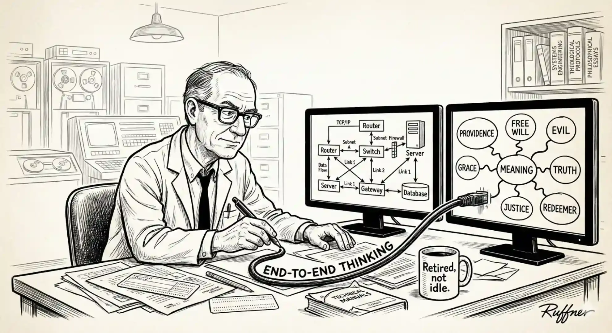
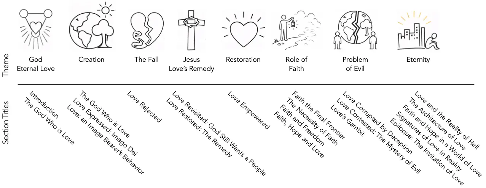
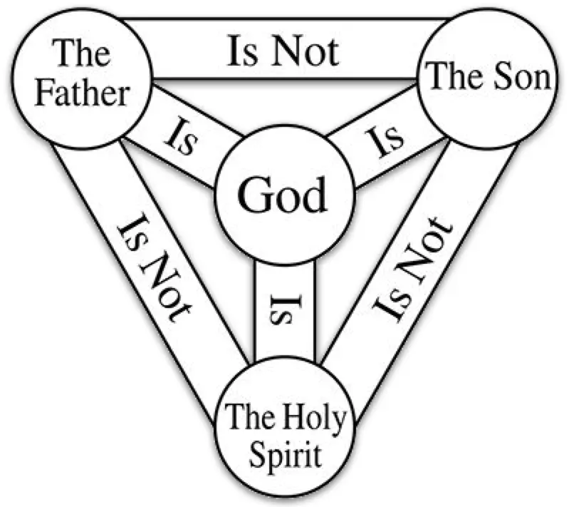
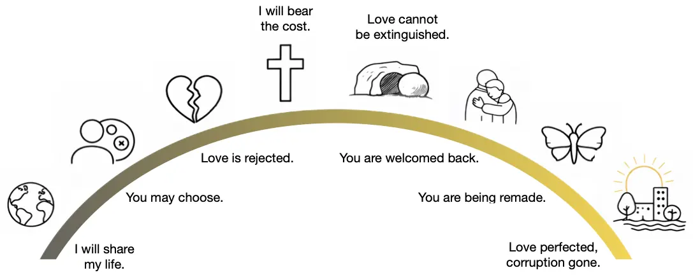
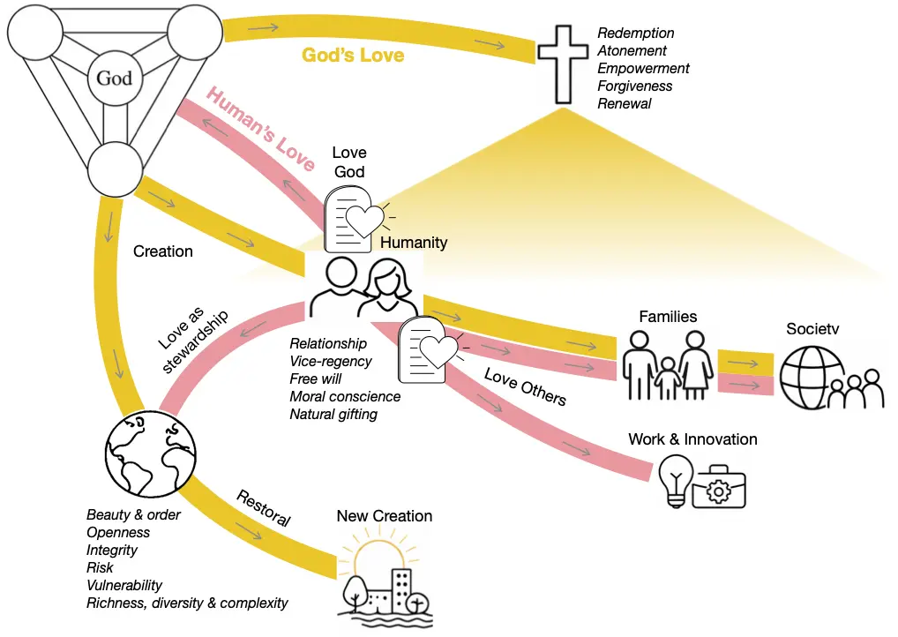
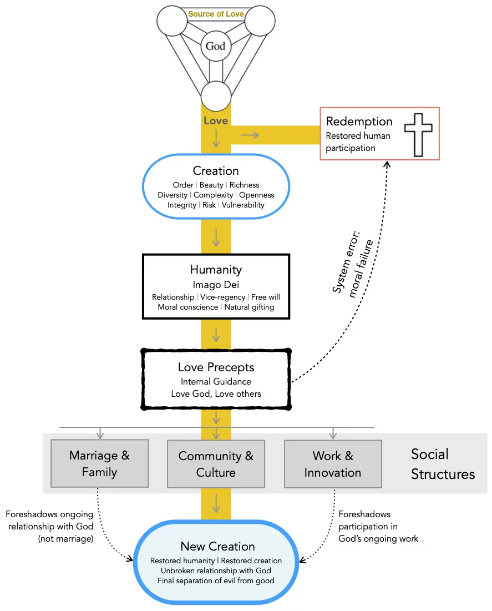

[Table of Contents] [Download PDF]
This essay started off with what I thought was a focused question: “If God is love, how does His love express itself in relationship to humanity?” Once I started pulling on that thread, it became clear how deeply it undergirded reality itself.
From the outset I also had a challenge for myself—could the central storyline of Scripture be expressed in ordinary language? That is, could Christianity be presented in terms that can be examined through everyday human experience, avoiding religious words and clichés? During this exploration, I encountered a public discussion2 between Ayaan Hirsi Ali—who converted from Islam to atheism and later to Christianity—and Richard Dawkins, one of the most prominent advocates of New Atheism. In that exchange, Dawkins suggested that Christianity is preoccupied with sin. What caught my attention was Hirsi Ali’s response. She argued that Christianity is not obsessed with sin, but with love. As I continued writing, I found myself re-examining doctrines I had long since taken for granted. What emerged was an account of reality itself—one in which divine love stands behind freedom, suffering, and the openness of the cosmos.
My aim in this essay is simply to offer a clear explanation of the Christian story, so that anyone who is curious can examine it carefully and reach their own conclusions.
This essay is my first foray into theology. Now retired from a career as a wireless/systems engineer in Silicon Valley, I finally have the time—and perhaps the audacity—to write as an amateur theologian. I’ve always been interested in why things are the way they are and enjoyed peeling back “the layers of the onion” to see how ideas fit together. I’ve never been a scientist—one to discover or invent new techniques or algorithms—but an engineer, interested in applying those ideas to build something practical and useful. As a systems engineer, I learned to think end-to-end—to “connect the dots” across complex architectures and see how individual components form a coherent whole. I approach theology the way I approached complex systems: by looking for coherence, explanatory power, and internal consistency.
Just before retiring, I worked as a solution architect. My role was to understand our customers’ requirements—their objectives, assumptions, and operating realities—and then work with our team to design an end-to-end architecture in which every component fit coherently within the whole. Applied to this essay, the “requirements” for describing our reality are captured in the appendix on Foundational Questions, and the text that follows is an attempt to articulate an architecture that addresses them. Borrowing a term from my former profession, this essay is an exploration of the “solution architecture” described by Scripture—its integrated account of creation, freedom, corruption, suffering, and restoration.
I didn’t begin this essay with any particular audience in mind. To be honest, my aim was simply to explore theology for myself. One lesson I learned as a systems engineer is that committing ideas to writing has a clarifying and corrective power of its own: once ideas are expressed in prose, assumptions surface, ambiguities are exposed, and poorly integrated thinking becomes difficult to ignore. In that sense, writing functions as a crucible for thought. The concepts in this essay have been brewing in me for several years. Now, having written this, I hope it will resonate with others in STEM fields, drawn to philosophy and theology—especially those who suspect that Christianity, if true, must be something more than rules, rituals, or inherited tradition. In particular, this essay is aimed at persons who are open-minded, searching for truth. After all, that was me in my late forties and early fifties—I had some fundamental questions about truth, and spent that time seeking answers.

Across history, many of the world’s leading scientists, philosophers, and artists have found Christianity deeply consonant with reason. Early scientists explored the cosmos expecting it to operate according to rational, intelligible laws—an expectation grounded in belief in an orderly Creator. It’s therefore not surprising that those who approach Christianity from technical or scientific backgrounds often find its claims open to careful and disciplined examination.
None of us stands outside this story. Whether we approach it as seekers, believers, engineers, artists, or something in between, the questions it raises involve each of us—our longings, our failures, and our hopes. What follows is a rediscovery of the central thread that gives Scripture its meaning: the story of divine, agape love.3 As you read,4 consider whether this account of love coheres with your lived experience and helps make sense of the world as you actually encounter it. For if Christianity is true, then behind everything stands one great and unchanging reality: God is love.
Note to reviewers: I’ve done my best to be careful and conscientious in the pursuit of truth and accuracy, but there are undoubtedly places where my thinking is incomplete, unclear, or wrong. I’d be grateful if you’d point out what I’ve missed and help me see where arguments need sharpening or rethinking.
If you’re willing, answering a few specific questions would be especially helpful: Where did the argument feel unclear or unconvincing? Where did you find yourself wanting more—or less— support or detail? Were there sections that felt overly dense—or not developed enough? And more broadly, what objections did you expect to see addressed but did not encounter?
This draft reflects an ongoing effort to think carefully about the relationship between faith, reason, and the structure of reality, and your feedback will directly shape the next revision. Thank you for your patience, generosity, and thoughtful engagement.
Love: An Image Bearer’s Behavior
Love Contested: The Mystery of Evil
Love Revisited: God Still Wants a People
Recap: The Architecture of Love
Epilogue: The Invitation of Love
No doubt you’ve attended a wedding where two people beautifully profess their love, and during the ceremony the following Scripture is read:
1 Corinthians 13:1-7 (NIV),5 “If I speak in the tongues of men or of angels, but do not have love, I am only a resounding gong or a clanging cymbal. If I have the gift of prophecy and can fathom all mysteries and all knowledge, and if I have a faith that can move mountains, but do not have love, I am nothing. If I give all I possess to the poor and give over my body to hardship that I may boast, but do not have love, I gain nothing. Love is patient, love is kind. It does not envy, it does not boast, it is not proud. It does not dishonor others, it is not self-seeking, it is not easily angered, it keeps no record of wrongs. Love does not delight in evil but rejoices with the truth. It always protects, always trusts, always hopes, always perseveres.”
Few would argue that love is humanity’s highest virtue. In fact, Christianity at its core is the story of divine [agape] love told by Scripture—not the sentimental kind that fades with emotion or circumstance, but the self-giving love that radiates from the heart of God Himself. This essay argues that every act of God—from creation to judgment—is an expression of divine love. This claim—that love lies at the heart of Scripture—may sound surprising at first, but it arises directly from Scripture, which will become clear as the essay unfolds.
This essay explores how that love unfolds across the grand narrative of Scripture—from creation to new creation. Every act of God, whether joyous or severe, expresses the same motive: love seeking relationship. The universe exists because God delights to give; humanity exists because God’s desire is to have a human family as large and vibrant as a nation; redemption occurs because He refuses to abandon; judgment comes because real love will not let evil endure forever.
The sequence of this essay traces the story beginning with love expressed in creation—God’s generosity spilling into a world begun with beauty and purpose. It continues with love corrupted by sin, as humanity turns inward and the created order fractures. The essay then explores the deeper story behind the evil we encounter in the world. Yet love does not withdraw; it is revealed anew in Jesus of Nazareth, who shows the world what agape love looks like in human form. Through His death and resurrection, love restores what sin destroyed, opening the way to a renewed world where love rules again. God’s Spirit then works to perfect love within the redeemed—people who’ve adopted the remedy God provides—forming hearts that mirror the heart of God. Finally, even in judgment, love remains the measure—for hell is the tragic consequence of refusing love, and heaven the fulfillment of embracing it.
Ah yes, hell. That infamous destination from which we all need fire insurance. How can this tragic outcome fit within a love story? Somehow it must, for reality is rife with carnage from the heinous and corrupting role of evil, fomented by the Serpent and his spiritual cohort.
This is the arc of the Christian story—the movement of divine love through creation, corruption, revelation, restoration, perfection, and final consummation. Each section that follows traces one stage of this journey, revealing how the essence of Christianity is not rules, ritual, or philosophy, but the unwavering truth that God is love, and everything He’s ever done flows from that eternal reality.

One of the quiet surprises of the Christian story is how closely it aligns with our inner yearnings—wanting to be loved and knowing we should love others—while answering the question of why this life of love proves so difficult to sustain.
Scripture is clear that God’s essential nature is love6—not merely an attribute, but His very being. When God revealed His own character to Moses, He declared Himself to be “the compassionate and gracious God, slow to anger, abounding in love and faithfulness, maintaining love to thousands…”7
From Scripture we know God is comprised of the Father, Son, and Spirit (the Trinity8). As such, He’s able to exhibit [agape] love—passionate commitment to the well-being of others within the Trinity—even before the cosmos or humankind were created.9 He didn’t “need” to create humankind because He was lonely.10 He didn’t need to create beings to worship Him, presumably to prop up His low self esteem.11 Scripture describes God as a perfect being, loving, just, omnipotent, omniscient, and omnipresent, to name a few of His key immutable attributes. Agape love is the kind of love whose shape we recognize most clearly in our deepest human commitments, where another’s flourishing becomes worth real sacrifice.

God created us out of love and a desire to share His loving, Trinitarian experience more broadly.12 God’s inner life is the fullness of goodness,13 eternally shared as love within the Trinity. When Scripture declares that “God is love,” it reveals the relational character of this divine life, graciously extended toward creation. For humans, love is the clearest way we encounter that reality, for His love is His goodness personally directed toward us.
We shouldn’t be surprised that God’s motivation for creation was love; after all, this mirrors our own experience when we create, no matter our field of endeavor. Even though a project can feel like work—sometimes taking a long time—we often express the experience as a “labor of love.” We enjoy talking about our creation and sharing that joy with others, especially those with whom we have a relationship.
Prior to creating humankind, Scripture teaches that God created the cosmos along with our planet, the latter teeming with flora and fauna. How He accomplished this is outside the scope of this essay. What’s clear is that we live in a rich, diverse, and awe-inspiring universe, demonstrating the magnitude of His unfathomable love for us. The greatest minds on the planet have been discovering its mysteries for thousands of years, and yet we’re still nowhere near a comprehensive understanding. We don’t live in a dull or ordinary place!
If this much is true—that ultimate reality is personal, relational, and rooted in self-giving love—then the shape of the universe begins to make sense. We should expect that love, not power, lies at its foundation. And if love lies at the foundation, then we should expect that our own deepest longings for connection are not accidents, but echoes.
After the creation of the universe, in love, God proceeded to create humankind. In Scripture we read:
Genesis 1:26-28 (NIV), “Then God said,”Let us make mankind in our image, in our likeness, so that they may rule over the fish in the sea and the birds in the sky, over the livestock and all the wild animals, and over all the creatures that move along the ground.” So God created mankind in his own image, in the image of God he created them; male and female he created them. God blessed them and said to them, “Be fruitful and increase in number; fill the earth and subdue it. Rule over the fish in the sea and the birds in the sky and over every living creature that moves on the ground.”
From this Scripture passage, we learn…
Humans were created in God’s image. This means all people possess intrinsic dignity and worth because they bear the image of God—regardless of their social status, sex/gender, ethnicity, ability, or behavior. That’s why life is sacred and justice14 is fundamental in Biblical ethics. We’re God’s vice-regents (representatives), or image bearers, on Earth—created to reflect His loving character and wisdom as we live.
Humans were created in God’s likeness. To be created in God’s likeness means humanity uniquely mirrors God’s capacity for relationship, with Him and others.15 We have freedom of choice,16 reason, creativity, stewardship, and a conscience which instinctively knows right and wrong.17
God created male and female. Somehow, together, the two sexes reflect God’s image in a way that neither does alone. Each is equal in worth and equally called to bear God’s image in the world. Scripture hints that this isn’t accidental. God is relational in His very nature, and the relational unity of husband and wife—the “two becoming one flesh”18—echoes, however faintly, the unity-in-diversity that exists within God Himself. So while marriage is not a direct parallel to the Trinity, it does provide a meaningful analogy of the relational harmony that flows from God’s own nature. In addition, God establishes a partnership between husband and wife that reflects the partnership each of us is invited to share with Him.
In Scripture, humanity represents the climax of creation, and the creation of male and female together forms the apex of that climax, revealing that the image of God is expressed most fully in relational partnership.19
Not incidentally, the Hebrew word used to describe God’s creative intent for woman does not denote a subordinate assistant (as the English translation, “helper”, can imply), but an equal counterpart who supplies what is missing in man, without whom the fulfillment of their shared vocation would not be possible. This same Hebrew word is used elsewhere in Scripture to denote a powerful rescuer or strength-bearing ally—often used of God Himself.
Humankind was given a vocation of stewardship. When rightly understood, stewardship is an expression of love: a posture of care and responsibility oriented toward the flourishing of what has been entrusted, not its exploitation or control. We were charged to cultivate the earth and care for its living creatures while preserving its beauty. We were also called to fill the earth with families—spreading communities that mirror God’s love, creativity, and wisdom. Although the Garden of Eden was beautiful and well developed, the rest of the planet still needed cultivation and development. Theologians refer to this as the “cultural mandate.” Humans were never meant to carry out this mandate independently from God—it was intended as a partnership!20 As the late pastor and author Tim Keller explains in his book, Every Good Endeavor,21 “The cultural mandate is a kind of partnership: God gives us the raw material of the world, and our job is to take it and build culture, develop society, create art, discover science. We are called to be his junior partners in the work of creation.”
| Aspect | Implication for Humanity |
|---|---|
| Image of God | Intrinsic dignity and worth; called to reflect God’s character and wisdom. |
| Likeness of God | Capacity for relationship, free will, reason, creativity, conscience. |
| Male & Female | Complementary; together reflect God’s relational nature; equal in worth. |
| Vocation | Cultural mandate: cultivate, fill, and care for creation. |
In summary: Humanity represents the visible expression of divine love on Earth. To be made in God’s image is to be invited into partnership with Him—to reflect His nature through compassion, justice, and stewardship. The Imago Dei is therefore not only a statement about our origin but also a calling: through the cultural mandate, we find our purpose in shaping the world, and through partnership with God, we discover the deepest meaning of human life. The cultural mandate calls humanity to seek a deep understanding of creation. Whatever your gifts—whether in science, the arts, or humanities—they are part of God’s cultural mandate. To illustrate, here are just some of the fields where human creativity participates in God’s plan:
Scientific fields: mathematics, natural sciences (physics, chemistry, biology), applied sciences (engineering, medicine, agriculture, environmental science), information technology, and data systems.
Humanities fields: philosophy, theology, law, politics, education, literature, arts, and music.
Economic and organizational fields: business, finance, entrepreneurship, commerce, manufacturing, operations, logistics, public administration, skilled trades, and technical vocations.
All of creation is therefore both a reflection and an invitation of divine love.
The point is simple but profound: whatever your vocation or passion, it is not peripheral but central to God’s purposes. You have a purpose and place in this story, and your gifts are meant to help fulfill the cultural mandate. God, out of love, designed a profoundly interesting, engaging, complex, sustainable, and beautiful environment for humankind—in the words of John Hammond (Jurassic Park), He “spared no expense.” And yet, just as Hammond’s lavish creation in Jurassic Park went horribly wrong, so too did God’s creation story when rebellion entered the picture.
Jesus of Nazareth taught that all Scripture hangs on two precepts:22 (1) love God with all your heart, soul, and mind; and (2) love your neighbor as yourself.23 In this essay, they’re referred to as the “Love Precepts”. A restatement of these precepts is the Golden Rule: in everything, treat others like you want others to treat you.24, 25 Scripture’s rationale for this grand summation is that love does no harm to others.26
To ensure his message to love was clear, Jesus defined “neighbor” by relating the parable of the Good Samaritan.27 To make it crystal clear, He said, “… love your enemies, do good to those who hate you, bless those who curse you, pray for those who mistreat you.”28 Why? “That you may be children [image bearers] of your Father in heaven.”
Love directs not only outward behavior—it includes our inner life as well. We are told to love God with our minds. In other words, our thought life must also be loving.29 Jesus does not merely want to eliminate sexual exploitation; He wants to eliminate lust itself. He doesn’t just want to end murder and racism; He wants to eradicate hatred at its root. He calls us to sincerely love others—not merely out of duty (“because it’s the right thing to do”), and not for self-benefit (“quid pro quo”)—but out of genuine concern for the well-being of others.
We also learn something of agape love through the God-given institutions of marriage and family. Those who are married have an experience of love that is passionately committed to the flourishing of a spouse. Likewise, those who’ve raised children have tasted this kind of committed love as well.
The best example of an image bearer in Scripture is Jesus.30 He was such a perfect representative that He could say,31 “Anyone who has seen me has seen the Father.” His life revealed what undistorted love looks like in human form.
During his time on Earth, Jesus demonstrated perfect image-bearing by serving humanity—even though He is God. When we read Scripture, we understand that true servanthood demands integrity—acting in harmony with one’s core nature. Jesus not only healed the sick, fed the hungry, and taught with compassion—behaviors that align with modern ideals of goodness—but His love for God also demanded that He boldly confront hypocrisy. He publicly rebuked corrupt religious leaders and, using physical force, drove the currency exchangers who were practicing extortion out of the temple.32
Perhaps the clearest description of Jesus’ servanthood is:33
In your relationships with one another, have the same mindset as Christ Jesus:
Who, being in very nature God, did not consider equality with God something to be used to his own advantage;
rather, he made himself nothing by taking the very nature of a servant, being made in human likeness.
And being found in appearance as a man, he humbled himself by becoming obedient to death—even death on a cross!
Isn’t it awe-inspiring that Jesus was a servant to us, sent to help and save us! We are so valuable to God! Many places in Scripture He calls Himself “our helper.”34 Let that sink in. It’s a staggering inversion of power!
It’s common for people to experience a deep sense of fulfillment after acts of service. Think of a time when you volunteered at a food bank or a community project. In hindsight, did it feel as though you received more than you gave—rewarded with an unexpected warmth or quiet satisfaction? This response is not accidental; it reflects our design.
Because we are made to mirror God’s moral nature, the command to love is not arbitrary—it’s the essence of true image-bearing. For many of us, this is where admiration quietly gives way to recognition: we see the beauty of this love clearly, yet realize how often something within us resists living it consistently. Unfortunately, seeing love embodied so clearly in Jesus does not automatically give us the ability to live it out; moral clarity, by itself, does not confer moral capability.
What would a life in partnership with God as an image-bearer look like? A practical life lived in partnership with God under the cultural mandate is one in which everyday work, creativity, and responsibility are consciously offered back to God as shared vocation rather than private ambition. In this partnership, a person seeks God’s wisdom and character while cultivating the world—whether through science, art, engineering, parenting, governance, or caregiving—so that creation increasingly reflects God’s goodness, order, and love. Work is done with excellence not merely for personal success, but as stewardship; relationships are shaped by justice and compassion because people are treated with dignity; and decisions are guided by trust in God rather than anxiety-driven self-rule. Such a life is neither withdrawal from the world nor domination of it, but faithful presence within it—learning, building, healing, and creating alongside God.
Upon creation of humanity, the first man and woman were placed in the Garden of Eden. There, they began fulfilling the cultural mandate. What occurs next is often described as disobedience, but at its heart it reflects a deep relational rupture. Here’s how the story unfolds in Genesis 3:1-7 (NIV):
Now the serpent was more crafty than any of the wild animals the Lord God had made. He said to the woman, “Did God really say, ‘You must not eat from any tree in the garden’?”
The woman said to the serpent, “We may eat fruit from the trees in the garden, but God did say, ‘You must not eat fruit from the tree that is in the middle of the garden, and you must not touch it, or you will die.’”
“You will not certainly die,” the serpent said to the woman. “For God knows that when you eat from it your eyes will be opened, and you will be like God, knowing good and evil.”
When the woman saw that the fruit of the tree was good for food and pleasing to the eye, and also desirable for gaining wisdom, she took some and ate it. She also gave some to her husband, who was with her, and he ate it. Then the eyes of both of them were opened, and they realized they were naked.
Besides Adam and Eve, four other entities were in the garden.35 Understanding their roles clarifies why the events in Eden unfolded as they did.
God Himself. Scripture says He walked and talked with Adam and Eve in the Garden of Eden.
The Tree of Life. Humans were permitted by God to eat the fruit of this tree. The fruit of this tree imbued its eater with immortality36 and is a sign-act37 for the wisdom, given by God, which brings true fulfillment in life.38
The Tree of Knowledge of Good and Evil (TKGE). God forbade humans to eat from this tree, under penalty of death.39 In other words, eating its fruit would sever their relationship with God. It was a direct violation of the first Love Precept—to love God above all. The TKGE was also a sign-act, and by eating, it represented taking for oneself the authority to decide right and wrong, good and evil, apart from God. In effect, it was a choice to trust one’s own understanding rather than God’s.40
The Serpent. Scripture tells us the Serpent, the antagonist, was the evil spiritual being, Satan.41 As John H. Walton, Professor of Old Testament at Wheaton College, observes, serpents in the ancient Near Eastern world were often linked with chaos and disorder—imagery that would have signaled to ancient readers that a force hostile to God’s order had entered the story.42
One might think that putting the TKGE in the garden was a cruel thing to do. Why would a loving God put humans to such a fateful test, knowing ahead of time they’d fail? Here’s why: humans were created in the likeness of God—moral beings with free will. Our raison d’être is love—to live in willing relationship with God, not robotic obedience. If there had been no alternative way to live other than the original nature imparted by God, there wouldn’t be any choice. Without choice, humans would essentially be robots—and how can a robot exhibit genuine love?
This perspective differs from viewing the TKGE merely as a test. The Tree of Life and the TKGE were sign-acts for wisdom and knowledge43 respectively, each pointing toward a distinct way of life. Choosing the Tree of Life meant embracing connection and partnership with God; choosing the TKGE meant opting for independence and separation. A loving God thus granted His created beings the freedom to choose the way they wanted to live—He did not compel that His love be returned. It was not a test, but a genuine choice; whichever path they chose carried real and lasting consequences.
In the dialog between the Serpent and Eve, the first statement by the Serpent was sarcastic, mocking God and questioning His generosity: “Did God really say…”? This was followed by a blatant lie, “You will not certainly die.” The Serpent was implying that God had hidden motives and couldn’t be trusted. Then he said, “You will be like God.” In other words, the Serpent suggested that God couldn’t be trusted to lead them into their best life—if they wanted true fulfillment, they would have to seize knowledge and make their own decisions. He was telling them that they could—and should—live independently from God. Eve believed the Serpent, as shown by her conclusion that the fruit was “desirable for gaining wisdom”.44 Put plainly, Eve listened to and trusted the Serpent; she believed the deception. The Serpent’s words appear to have struck a resounding chord in Eve, appealing to fear and a desire for control. Since Scripture is clear that Eve was deceived, blatant rebellion may not have been in her mind—she may have truly believed her relationship with God wouldn’t end. By contrast, Scripture presents Adam’s choice differently: he was not deceived, but knowingly joined in the act, bearing responsibility for their disobedience.
After both Adam and Eve ate the forbidden fruit, God cursed humanity and the earth in an event referred to as “The Fall.”
God cursed the Serpent and predicted that He would eventually deal the Serpent a mortal wound. Before that wound was inflicted, Scripture says the Serpent would have offspring.45 What? How? In the Fall, the Serpent usurped God’s authority over the Earth by persuading humans to live without a relationship with Him. By choosing independence, they effectively aligned themselves with the Serpent and became his “offspring.”46 Thus, the Serpent was forming a rival kingdom—a people defined by independence from God.
God cursed Adam. The ground would now resist his efforts; he would have to work by the “sweat of his brow” to produce food. Adam and Eve were banished from the Garden of Eden and denied access to the Tree of Life.
God cursed Eve. Childbirth would now involve great pain, and conflict would enter her relationship with her husband, who would “rule over” her—opposing her [now] natural desires. The curse on Eve conferred disorder in their marriage relationship.
God cursed the Earth—the Earth would now produce thorns and thistles, making agriculture toilsome. Scripture links the fate of Earth to the fate of humanity, likely because humans have the mandate to be the Earth’s stewards. It makes sense—humans broke their relationship with God, and so their relationship with creation was also broken.
It’s interesting to note that the knowledge of good and evil itself was not the issue in the Garden. God Himself has that knowledge and Scripture says that His goal for us is to be conformed to His image. Evidently, God did not want humans to gain knowledge that way; humans needed to have knowledge imparted according to His plan and timeline,47 much like parents gradually imparting knowledge to their children as they mature.48
There’s another perspective on eating the TKGE’s fruit. It’s not just disobedience, but love turned inward—the self preferred over God. The Fall thus becomes the corruption of love’s order. In other words, sin is not merely a transgression of God’s commands, but that which breaks or harms relationship. Pride49 is the root of this choice—indeed, as Augustine of Hippo has written, pride is the opposite of love.50
As a result of the Fall, humans were separated from God—the word, death, in Scripture often means separation from God. Nevertheless, God, in His love, didn’t end the humans’ life immediately. He let them live out their lives in accordance with their choices and maintained their status as image bearers.51 Moreover, in His love, He promised to provide a remedy—the aforementioned mortal wound to the Serpent.
Note: in contrast to death as separation, the Apostle John defines eternal life in relational terms: John 17:3 (NIV) states, “Now this is eternal life: that they know you, the only true God, and Jesus Christ, whom you have sent.” In this verse, “know” refers not merely to intellectual awareness, but to the kind of knowing stemming from relationship.
Amazingly, God did not merely foresee humanity’s rebellion; in love, He freely chose to allow it. He designed a world capable of enduring—and even sustaining a measure of fruitfulness—should humans choose independence from Him. Though sin would introduce death and render life finite, God continued to sustain human existence and endowed humanity with the capacity to live an entire lifetime apart from Him—though human flourishing became profoundly disordered, fractured at its core by the loss of spiritual union with God. Humanity was never meant to exist untethered; only through intimate communion with God can our passions be rightly ordered and our lives fully aligned with their intended purpose.
In a paradoxical way, God’s love is also revealed in declaring physical death as the consequence of disobedience. Once Adam and Eve fell and became disordered by evil, unmediated52 shared life with God was no longer possible; perfect goodness cannot coexist with corruption. Had they been permitted to live indefinitely in that state, they would have been estranged from God’s presence and partnership forever. By making them mortal, God opened a different future. Death introduced the possibility of redemption—a second chance, and indeed, a lifetime of second chances. By imposing mortality, God acted in a way consistent with His own character: He neither ignored evil nor abandoned His creatures, but created a path by which they could one day be restored. In this sense, death was not merely a judgment, but a severe mercy—God remaining true to Himself while preserving the hope of reconciliation.
As we’ll see in the next section, the problem of evil in the world is not just due to the mistakes of the first humans. Human rebellion did not occur in isolation; it unfolded within a wider spiritual conflict.
Not all evil feels merely human in scale. When people reflect on history, they often notice that harm does not arise only from isolated individuals but also through large institutions—governments, economic systems, bureaucracies, and even respected organizations. Over time these structures have often produced patterns of exploitation: rulers who expand taxation or conscription to sustain their own power, colonial administrations that extract wealth from distant populations, corporate or financial systems manipulated so gains accumulate for a few while risks fall on many, and bureaucracies that enforce harmful policies long after their moral consequences are obvious. It can be tempting to conclude that institutions themselves are the source of the problem. Yet institutions do not act on their own; they are run by people. What institutions often do is amplify human behavior. They concentrate power, diffuse responsibility, and make it easier for individuals to pursue self-interest without directly confronting the human cost. The old observation that “power tends to corrupt, and absolute power corrupts absolutely” reflects a recurring pattern of human behavior operating within systems of authority. For this reason, evil is often experienced not merely as personal wrongdoing but as organized patterns of influence, incentives, and authority that shape how people act. The table below highlights several recurring forms of this kind of structured evil.
| Category | Description | Examples |
|---|---|---|
| Transnational criminal exploitation | Durable cross-border networks organize coercion and exploitation for profit, adapting continually to evade law enforcement. | Global human-trafficking networks; international narcotics cartels. |
| Propaganda and narrative control | Communication systems are deliberately used to shape public perception, mobilize populations, or suppress dissent. | Nazi propaganda under Joseph Goebbels; Soviet state propaganda under Joseph Stalin. |
| Terror networks | Ideologically driven groups coordinate violence across regions using decentralized cells, training networks, and modern communications. | al-Qaeda attacks including September 11 (2001); ISIS campaigns in Iraq and Syria (2014–2019). |
| Genocide and bureaucratized mass violence | State institutions—law, administration, propaganda, and security forces—are coordinated to persecute or eliminate targeted populations. | Holocaust in Nazi Germany (1939–1945); Rwandan genocide (1994). |
| Ethnic or ideological purges | Societies periodically erupt into organized violence fueled by ethnic, religious, or ideological divisions. | Armenian genocide (1915–1917); ethnic cleansing in the Balkans (1990s). |
| Persistent warfare | Large-scale organized conflict between societies recurs across centuries despite advances in diplomacy, institutions, and technology. | World War I (1914–1918); Russia–Ukraine war (2022–present). |
Scripture offers a further layer of explanation: it portrays evil not only as the product of flawed systems or disordered human desires, but also as the work of non-human intelligences that actively distort trust and breed fear—much as the Serpent did in Eden. These spiritual forces do not override human freedom or remove moral responsibility; rather, they manipulate and amplify the weaknesses already present in us, making our worst impulses seem reasonable. Such claims can provoke strong reactions—either dismissal or unhealthy fascination.
C. S. Lewis, the Oxford and Cambridge literary scholar—the first person to hold first-class honors, a fellowship at Oxford, and later a professorship at Cambridge—was one of the most influential Christian thinkers of the twentieth century. He cautioned in the preface to The Screwtape Letters:53 “There are two equal and opposite errors into which our race can fall about the devils. One is to disbelieve in their existence. The other is to believe, and to feel an excessive and unhealthy interest in them. They themselves are equally pleased by both errors.”
If one allows for the possibility that God exists, then reality may extend beyond the material universe. A creator of the universe would necessarily exist outside the physical system He made. And once the possibility of such a spiritual dimension is admitted, it’s not a large step to consider that it might include other personal beings—some aligned with good, others with evil—including the Serpent. In that case, the forces shaping human history may not be limited to the visible realm.
Scripture’s presents a cosmos in which moral and spiritual agency is real, consequential, and ultimately accountable to God. Whether one immediately accepts this unseen dimension or not, the pattern Scripture describes—persistent deception aimed at fracturing trust and corrupting love—remains disturbingly familiar in our world.
Before the creation of humanity, Scripture teaches that God created spiritual beings and endowed them, like humans, with genuine freedom. One of these beings is depicted symbolically as the Serpent—the prime antagonist in the Garden. Scripture portrays the Serpent as one who rebelled against God and became an adversary—not by creating, but by corrupting what God had made.
What motivates such an adversary? Scripture does not provide details, but many theologians have observed that the Serpent gains nothing in the sense of reward or benefit. His actions are oriented toward opposing God by damaging what He loves. In this sense, the evil propagated was parasitic, shattering good while contributing nothing of its own. The Serpent’s defining trait is portrayed as pride, the antithesis of love.54
Following humanity’s fall, Scripture traces a long conflict centered on God’s promise to heal and restore what had been broken. Throughout the Scriptural narrative, the Serpent appears as one who seeks to frustrate that promise—culminating in opposition to the mission of Jesus of Nazareth. Interestingly, the Serpent presented similar temptations to Jesus as he did to Adam and Eve; the result this time was different—Jesus did not succumb to his attempts at deception.55 Yet the cross and resurrection expose the nature of evil: distortion and deception. The patterns Scripture describes—fear amplified, trust eroded, truth twisted, communities fractured—are not relics of an ancient world; they remain disturbingly recognizable in our own.
The New Testament then portrays the ongoing unfolding of God’s Kingdom through the free response of human beings to the Remedy. At the same time, it depicts evil as continuing to oppose this work—not through coercive force, but through deception, division, and doubt. Scripture does not detail the inner motivations of such beings, but it consistently presents them as purposeful agents whose activity seeks to corrupt trust and sustain rebellion. The Apostle Paul summarizes this reality with sobering clarity: “our struggle is not against flesh and blood [humans], but against the rulers, against the authorities, against the powers of this dark world and against the spiritual forces of evil in the heavenly realms.”56 This struggle, therefore, is not confined to the ancient past; it remains a present reality.
Evil, in Scripture’s account, is not merely personal or psychological; it’s also systemic and spiritual. Yet Scripture is equally clear that these forces are not God’s equals. They cannot defeat Him by power. Instead, they seek to undermine His character through deception, lies, and slander. This is a shrewd strategy, because sheer power cannot answer such accusations. Consider a hypothetical mayor falsely accused of corruption: silencing critics through power would only confirm suspicion, not dispel it. What is required is a demonstration of integrity so compelling that the accusation collapses under its own weight.
In the same way, Scripture presents God’s response to evil as self-giving love. Even as deception continues, God reveals His character to humanity through patience, faithfulness, and ultimately through Jesus Himself—the true image bearer. Spiritual warfare,57, 58 then, is not merely a clash of power, but a cosmic contest over truth and trust.
Taken together, the activity of evil spiritual forces and humanity’s own disordered passions are Scripture’s explanation for why evil is so pervasive in our world. Love remains the goal of creation; but when love is opposed, its perversion can leave deep and lasting scars.
Rampant evil in our world raises deep questions: Did God create evil? If God is truly good and all-powerful, why does He allow evil to exist and persist? The latter is Oxford philosopher J. L. Mackie’s “Logical Problem of Evil.”59
University of Notre Dame Professor of Philosophy, Alvin Plantinga, successfully rebutted Mackie’s assertion in his book, God, Freedom, and Evil.60 Plantinga writes that God could have a valid reason to permit evil. One reason would be to grant his creatures genuine free will. If God restricted everyone’s choices such that they could never make an unloving one, they wouldn’t have genuinely free will. Plantinga continues to argue that even an all-powerful God cannot guarantee that genuinely free creatures will always choose love. While it may be logically possible to imagine free beings who never sin, it may not be feasible for God to actualize such a world without overriding their freedom.
Therefore, evil exists because God’s created beings possess genuine free will. When we make poor choices, to one degree or another, bad things happen (sin). God prefers beings who possess free will and can choose either good or evil rather than beings who lack freedom altogether. It seems that genuine love requires genuine freedom of choice; otherwise, as previously stated, God has merely created robots.
At this juncture, it’s imperative to state that God did not create evil—He declared his creation “good”. Nevertheless, when He created spiritual and human beings, He knew in advance that evil would arise. Knowing an outcome in advance is not the same as causing it. God’s foreknowledge of human choices does not make those choices necessary or coerced; they remain genuinely free acts for which the creature, not the Creator, is responsible.
One further clarification may help. When Scripture speaks of God knowing the future, it does not imply that He predicts events the way humans do. Classical Christian thought understands God as existing outside time, seeing all moments—past, present, and future—simultaneously. From that perspective, God’s knowledge of human choices does not coerce them; rather, He eternally knows the free actions of creatures within the world He sovereignly sustains.
As in the case of Adam, so it is for us too—our choices are meaningful and carry real outcomes; when we choose sin, we are morally culpable. Free will implies real consequences and genuine justice (more on this later).
What we often wrestle with is the sense that there ought to be some threshold at which God steps in and curbs evil. We tend to imagine God as a parent watching over children. For the small stuff, a parent won’t interfere; but when the screaming or crying starts, they do. Why isn’t it the same with God? Especially in truly horrific acts of evil—why doesn’t God, the ultimate authority and embodiment of goodness, step in to prevent the situation from getting worse?
Scripture confronts this question head-on. An entire book—Job—is devoted to it. Many scholars believe Job is the earliest book of Scripture written. If so, perhaps it’s more than mere coincidence that Scripture’s very first book confronts the mystery of evil. Job, a man described as upright and faithful, loses his children, his livelihood, and his health—not because of hidden wickedness, but because God permits a spiritual adversary to test him. The text is explicit: God is not the author of the moral evil or natural evil (see next section) that Job experiences, yet nothing occurs outside His sovereign allowance.
In anguish, Job demands an explanation. When God finally speaks,61 He does not offer a detailed justification. Instead, He reveals the vastness of divine wisdom and the limits of human understanding. The answer is not that suffering is trivial, nor that questioning is forbidden, but that God’s purposes extend beyond what finite creatures can fully grasp. Pastor and theologian, Tim Keller articulates it this way:62
“…if evil appears pointless to me, then it must be pointless. This reasoning is, of course, fallacious. Just because you can’t see or imagine a good reason why God might allow something to happen doesn’t mean there can’t be one… If you have a God great and transcendent enough to be mad at because He hasn’t stopped evil and suffering in the world, then you have (at the same moment) a God great and transcendent enough to have good reasons for allowing it to continue that you can’t know. Indeed, you can’t have it both ways”
Yet Job’s story does not end in cold detachment. His fortunes are restored, he again has sons and daughters, and his friends, who insisted his suffering must have been deserved, are corrected. The book leaves us with tension rather than resolution: God is sovereign, evil is real, and human understanding is partial.
Beyond the story of Job, Scripture consistently portrays God as patient to a degree that far exceeds human tolerance.63 Evil is permitted for a long time—not because it is ignored, but because judgment is restrained. Again and again, divine judgment appears only after prolonged warning, forbearance, and opportunity for repentance.64 From the days of Noah, to the exile of Israel, to the delayed conquest of Canaan, the pattern is the same: God patiently waits, warns, and endures long before He acts.
Why is God’s patience exercised at this scale and for this long? Why is suffering permitted to reach such intensity; why does it fall so unevenly across humanity; why are some evils restrained while others are allowed to unfold; and why do the effects of evil echo across generations? Scripture affirms that God has reasons for His restraint, yet does not disclose them fully. It’s here that the mystery of evil remains—finite creatures cannot fully grasp the purposes of a God whose wisdom exceeds their own.
C. S. Lewis, in The Problem of Pain,65 suggests another possible reason for the presence of evil in our world:
“The human spirit will not even begin to try to surrender self-will as long as all seems to be well with it…pain is unmasked, unmistakable evil; every man knows that something is wrong when he is being hurt…pain insists upon being attended to. God whispers to us in our pleasures, speaks in our conscience, but shouts in our pain: it is His megaphone to rouse a deaf world.”
Incredibly, Scripture teaches that suffering is critical for proper transformation of the human spirit. Romans 5:3–4 (NIV) states, “…we know that suffering produces perseverance; perseverance, character; and character, hope.” In other words, God can use evil for our good if we’re in partnership with Him.
We all can become angry at God over our own pain and suffering, or that of someone we love. To this, Peter Kreeft, a Catholic philosopher at Boston College and The King’s College, points out in his book, Making Sense Out of Suffering:66
“… the Christian God came to earth to deliberately put himself on the hook of human suffering. In Jesus Christ, God experienced the greatest depths of pain. Therefore, though Christianity does not provide the reason for each experience of pain, it provides deep resources for actually facing suffering with hope and courage rather than bitterness and despair.”
Christianity does not offer a simple explanation for every instance of suffering, but it does proclaim a God who has entered into it. If evil reveals the cost of freedom, it also reveals the depth of God’s commitment to love—a commitment that is neither passive nor resigned, but purposeful.
For much of my life, I thought of the doctrines discussed thus far as isolated components—each individually defensible, but not obviously connected. Only when I began tracing them back to a single foundational premise—that God is love—did an architecture begin to cohere.
For years I’d heard Christians say, “Christianity is not a religion; it’s a relationship.” To me, it felt like a hollow cliché—something often said without meaningful clarification. Looking back, that reaction makes sense. I’m a fairly typical geeky engineer. It’s sometimes easier for me to remember numbers and equations more easily than people I’ve known. I’ve been in many conversations where the long, awkward silence appears because I couldn’t think of another topic to bridge the discussion. So it feels a bit strange writing an essay about relationships—it’s never been my forte. On the other hand, recognizing logical patterns and developing a coherent architecture has fascinated me for a long time.
As this essay took shape, I began to understand what that claim actually meant. The fog slowly lifted. What I had once assumed to be a collection of religious obligations revealed itself as something far more elemental and less complicated than I expected. At its core, the call of God’s love was not esoteric or ceremonial. It was disarmingly simple and could be explained in ordinary, everyday terms. And once that pattern became visible, the next piece of the architecture began to fall into place.
A corollary to the problem of moral evil is the problem of natural evil. If God is truly loving and good, why did He create a world in which suffering, injury, and destruction arise apart from human wrongdoing, and many times, without human involvement?
| Aspect | Description |
|---|---|
| Free Will | Genuine love requires genuine freedom; evil results from misused freedom. |
| Soul-Making | Suffering develops character, perseverance, and hope. |
| Open Cosmos | Nature is granted lawful integrity and openness, allowing real risk. |
| Spiritual Warfare | Evil spirits actively deceive and corrupt, prolonging rebellion. |
Natural evil refers to suffering resulting from the ordinary functioning of the physical and biological structures of creation. It’s not caused by personal sin but by the world operating according to stable causal patterns governed by the laws of physics. Earthquakes, hurricanes, disease, and genetic disorders arise from nature doing what nature does.
Natural evil can be broadly grouped into three domains: geological catastrophe, meteorological disaster, and biological suffering.
Geological catastrophes—earthquakes, tsunamis, volcanic eruptions, and landslides—arise from tectonic processes that are essential for habitable continents, mineral recycling, and long-term climate regulation. Plate tectonics renew soil nutrients, regulate atmospheric carbon dioxide, and generate the continents on which terrestrial life depends. The same forces that raise mountains and sustain ecosystems can also devastate cities. A planet without tectonic activity would be geologically inert and far less capable of supporting a complex biosphere.
Meteorological disasters arise from atmospheric systems that distribute heat, water, and energy around the globe. Hurricanes, monsoons, tornadoes, floods, droughts, and avalanches are extreme expressions of the same weather dynamics that make agriculture, freshwater renewal, and ecological balance possible. The violence of storms is not the breakdown of order, but order operating at immense energy scales.
Biological suffering arises from processes such as genetic mutation, cellular competition, and microbial ecosystems—mechanisms without which life could neither adapt, heal, nor persist. DNA replication and mutation enable immune defense and evolutionary resilience, yet they also allow cancer, congenital disorders, and degenerative disease. The capacity of living systems to repair themselves is inseparable from their capacity to malfunction.
Traditionally, Christian theology has understood natural evil as one of the consequences of the Fall. Scripture teaches that post-Fall creation is “subject to frustration” with “bondage to decay.”67 This account rightly emphasizes that the world is no longer functioning as originally intended. Yet physicist-theologian John Polkinghorne has suggested that this explanation may not be the whole story. In Science and Providence: God’s Interaction with the World,68 he proposes that God created a world that is not only lawful but genuinely open—a creation granted genuine freedom within the constraints of its laws.
Polkinghorne suggests that God has created nature with real integrity, by which he means that the natural world is allowed to develop according to its own consistent laws—the laws of physics—without being micromanaged by God. From this integrity flows the concept of openness. In Polkinghorne’s view, openness means that the future is not exhaustively fixed by the past: novelty can arise and outcomes are not fully scripted. Integrity concerns the kind of world God has made—one with authentic structure and genuine causal powers—while openness concerns the status of its unfolding future.
Just as God’s love grants humans genuine freedom, Polkinghorne suggests that God—in love—extends an analogous freedom to nature. Not that nature is conscious or agentic, but that creation is allowed to explore the range of possibilities permitted by physical law: to develop, unfold, and interact in ways that are not exhaustively predetermined. Polkinghorne points to several features of the natural world that make such openness intelligible, including chaotic systems (where small uncertainties grow exponentially), quantum indeterminacy, and emergent behavior in complex systems. Together, these mechanisms show how a world can remain lawful and structured, yet genuinely open. Such openness makes life possible—but it also makes tragedy unavoidable. The same processes that sustain life and creativity also carry the potential for destruction.
All three domains described above—geological, meteorological, and biological—are governed by what scientists call chaotic systems: systems that are lawful (obey the laws of physics) and deterministic in principle, yet practically unpredictable due to extreme sensitivity to starting conditions (the point in time at which a prediction is made). Technically, “chaotic” does not mean disordered; it means that small uncertainties in a system’s state grow exponentially over time. This behavior defines a Lyapunov time—the horizon beyond which prediction fails because starting conditions cannot be specified with sufficient precision. Once that time horizon is crossed, the system is unpredictable. Weather forecasting provides a familiar example: despite well-understood physical laws, forecasts beyond one to two weeks (the Lyapunov time) become inherently unreliable. In such systems, unpredictability is not a defect of nature, but a built-in feature of openness.
That said, God remains fully sovereign and able to act decisively within creation; nevertheless, this openness does not mean the future is secretly fixed. In an open world governed by lawful and chaotic processes, God may act selectively and providentially—shaping contexts, restraining certain outcomes, or enabling goods—without scripting the free choices of humans. Openness remains genuine because God ordinarily allows creation to unfold without control, permitting even outcomes He does not desire, while retaining the authority to intervene when His purposes require it. Interpreted through an engineering lens, this means that even imperceptibly small changes in conditions can lead a chaotic system to unfold along a very different path, allowing room for providential guidance without the suspension of natural laws. Polkinghorne himself suggests that in a genuinely open cosmos, even God may not know in advance how every indeterminate process will resolve. While this preserves creaturely freedom, I take a slightly different view of divine knowledge: divine omniscience need not be limited by openness in creation. A God who transcends time can fully know the unfolding of an open universe without coercing it—just as knowing the outcome of a human endeavor does not entail causing it.
A skeptic may object that even if natural evil arises from lawful and open physical processes, God could still have intervened to prevent particular instances of suffering. This objection parallels the classic challenge raised against human free will: if God is truly good, omnipotent, and omniscient, why allow harmful outcomes at all? Plantinga’s insight applies not only to moral evil but also to natural evil. The mere fact that God could intervene in a natural process does not mean He should. As Plantinga has argued in the context of human freedom, a moral obligation to prevent an evil arises only if no greater good is secured by allowing it. Where divine restraint preserves such goods, the existence of preventable evil poses no contradiction. In a world intended to possess real integrity, divine non-intervention may facilitate good such as responsibility, trust, and meaningful action on the part of humans. For example, even though we cannot precisely predict when or where an earthquake will occur, we remain responsible to design buildings that don’t collapse when one does. If God regularly intervened, we likely wouldn’t take our engineering and construction responsibilities seriously.
As such, openness preserves both moral freedom and natural regularity. It makes prayer meaningful, responsibility real, and human action genuinely consequential. Yet it also means that creation’s lawful powers are permitted to unfold—even when the outcomes are tragic. God’s love is not expressed through a padded simulation but through a real world with real risks.
If Polkinghorne is right, natural evil exists not because creation is purposeless or abandoned but because in love, God risked creating a world that’s truly alive. A perfectly safe world would not be a perfected world—it would be a lesser one.
In addition to the creative freedom of Polkinghorne’s chaotic world, Scripture tells us that spiritual beings—both good and evil—have the capability to manipulate the natural world. For example, in the story of Job, the Serpent is the instigator of calamities that take the form of recognizable natural events—fire falling from heaven (lightning?), killing sheep and their shepherds, and a great wind collapsing a house and killing its occupants.69 The text leaves the physical mechanisms unspecified, allowing for spiritual agency working through natural processes. In another instance, the Serpent afflicts Job with painful sores all over his body.70 In a benevolent situation, Jesus calmed a storm.71
Scripture presents natural evil as the result of multiple, layered causes rather than a single mechanism. We don’t know the reason for each instance of natural evil. At the most fundamental level, creation itself is subject to decay as a consequence of the Fall. At times, God also permits or employs natural events as acts of judgment or healing, while spiritual forces of evil further exploit the world’s brokenness. These explanations are not rivals, but operate together within a creation that is no longer functioning as it was originally intended.
This section points to another fundamental truth of God’s love: love lives with risk. Love that refuses risk is not love; it’s control. Sit with that thought for a moment. Imagine parents who never permit their child to take age-appropriate risks—their child’s growth would be stunted, not protected. Imagine a spouse who refuses to trust their partner with freedom; such a relationship would be suffocating. In every meaningful relationship, love entails vulnerability, and vulnerability carries risk.
If you genuinely love someone, you want to see them grow and mature. That’s true of parents, teachers, and—at their best—managers. In my own experience as an engineer, when managers focus on developing people rather than tightly controlling outcomes, innovation and initiative flourish. Not every manager did this equally well, but the pattern was clear: excessive control suppresses growth and motivation, while trust and freedom invite it. If this is true in human systems, it’s not difficult to see why God’s love might operate in the same way—seeking our formation rather than our containment.
God could have created a world that functioned entirely on its own, like the planetary motions that require no human guidance or the water cycle that continually circulates across the Earth without our help. Instead, He created a world filled with latent potential that invites human participation. Sand becomes the foundation of modern computing when silicon is refined into microprocessors. Lightning hints at the presence of electricity, but only human ingenuity transforms that discovery into power grids that illuminate cities. Metal ores lie buried in rock—often concentrated in veins that make mining viable—awaiting the ingenuity that extracts and forges them into tools, bridges, and machines. Even animals flourish under thoughtful human care; livestock raised and tended by people become sources of food, clothing, labor, and companionship. Creation therefore contains immense possibilities that unfold through human creativity and stewardship. Yet this design also carries risk. A world that invites human participation must allow human freedom, and freedom always includes the possibility of misuse. But it is precisely this openness that makes love, responsibility, and genuine partnership with God fulfilling. In such a world, we discover both our purpose in shaping creation and our meaning in doing so alongside Him. Yet partnership of this kind cannot flourish without freedom.
Creation, then, is love’s gambit—not a gamble born of uncertainty, but a deliberate commitment to a world in which freedom and consequence are real. By “risk,” I do not mean uncertainty for God, as though He were guessing at outcomes. Rather, from humanity’s perspective, we inhabit a world not mechanically predetermined at the creaturely level—a reality in which freedom carries the possibility of both rebellion and responsibility, where evil and suffering can harden the heart or deepen compassion, and where love itself can be chosen rather than compelled. As we confront moral evil, we also discover opportunities for growth. Courage, forgiveness, justice, and sacrificial care for others often emerge precisely when love responds to wrongdoing rather than ignoring it. Even societies sometimes find their moral clarity in resisting grave injustice. The resolve of nations that opposed Nazi tyranny during the Second World War is one example often cited. In this way, God does not call evil good, but He can bring good from it—drawing maturity, responsibility, and deeper love from the very circumstances that threaten to corrupt them. Rather than controlling every outcome, He brought forth a world truly alive—even at great cost—so that love itself might be real.
Yet a world in which love can be freely rejected is also a world in which love must eventually act. If freedom opened the possibility of rebellion, it also set the stage for redemption.
An important question to ask at this juncture is, “What does God want?” God wants a deep, personal relationship with each and every human on the planet. In the Garden of Eden before the Fall, God walked and talked daily with Adam & Eve.72 In the present day, as will be explained later, God’s Spirit indwells humans, thereby living with them. At the end of the age, God promises a new heaven and a new earth73 wherein God and humans dwell together eternally.
Although God wants you to join His family, He won’t override your will. Suppose a man and woman begin dating. After a few dates, he realizes he’s fond of her and asks if she’d like to be his girlfriend. She breaks his heart by replying, “I just want to be friends.” At this point, what is the loving thing to do? Should he respect her wishes and just be friends? Or should he think, “I’m going to win her over—she just needs to see how much I love her”—and then begin texting her constantly, buying her gifts, and pushing past her boundaries? Obviously, he should honor her request. In the same way, God honors your response to Him. Scripture describes many examples of this truth: if a person persistently seeks things outside the bounds of the Love Precepts, God will not force them otherwise.74
C. S. Lewis stressed that God won’t override your free will even regarding the most important decision of your life, the one which determines your ultimate destiny. In his book, The Great Divorce,75 Lewis writes that God doesn’t send people to hell against their will: “There are only two kinds of people in the end: those who say to God, ‘Thy will be done,’ and those to whom God says, in the end, ‘Thy will be done.’ All that are in hell, choose it.”
God loves us so much that He actually protects our free will. This protection is described by a concept known as “the hiddenness of God”. God is hidden in that He doesn’t always make His presence, power, or purposes unmistakably obvious to us. It’s not that He’s absent, but that He chooses not to overwhelm humans with constant, undeniable displays of His existence. After all, if He revealed to each of us His full nature—so powerful and glorious as to remove all doubt—we would be overwhelmed with proof of His existence and love.76 Consequently, our love for Him would no longer be a choice; it would be a foregone conclusion compelled by revelation.
Another perspective on God’s hiddenness appears in common RomCom movie plots: one character conceals their wealth at the beginning of a dating relationship. Their goal is not deception but to avoid influencing the other person’s motives. Wealth changes behavior. It can undermine genuine affection. In a much deeper way, if God revealed the full weight of His glory, power, and beauty at all times, it would overwhelm us. Our response would be automatic rather than freely given; we would likely want heaven for our own benefit, not for the relationship it’s based upon. God’s hiddenness, then, is a mercy that preserves the authenticity of our relational choice.
However, there’s a problem. Humans are sinful, and God’s love requires justice for sin. Suppose two people go to court over stolen property. During the trial, the defendant admits to stealing it, but says he sold it and gambled away the proceeds. It might be loving for the judge to show mercy to the thief (perhaps because of extenuating circumstances), but it would be unloving to ignore the victim’s loss—she no longer has her property nor the resources to replace it. Love demands justice, because love takes harm seriously.
Moreover, true justice becomes exceedingly difficult when there’s no human remedy. How can virginity be restored to a rape victim? How can a lost life be returned to the family of a murder victim? How can the emotional harm of verbal abuse simply be undone? In such cases, human courts can only offer imperfect justice. But God promises to administer final, perfect justice at the end of the age. Those who accept the Remedy will receive new bodies—fully healed, freed from every defect, and restored from every wound—rectifying every wrong ever committed against them or by them and removing the aftereffects of accident or disease.77 For those who reject the Remedy, Scripture teaches their final judgment will be just and proportionate.
In a hypothetical “court” in which God and humanity are on trial, who is the one who is seeking justice? Who committed the offense? If humans are the offenders and God is the one offended, what “harm” has been done to God that requires compensation? In a way, it seems a silly question since God is a perfect and complete being—humans’ sin cannot diminish Him nor can recompense “repair” Him. But if this is true, why does He demand justice?
Actually, it turns out that God was harmed:
Sin breaks our relationship with God.78 God views our relationship with Himself much like a human marriage relationship; He sees us as His beloved spouse. So when we choose something besides Him—whether money, fame, or anything else—He views it as adultery.79 Scripture even describes His emotional response as that of a jilted spouse.80 Most of us never stop to consider God’s perspective, but it makes sense: He created us for relationship.
Sin causes God emotional pain.81 As a parent, how do you feel when you see your children making poor choices? Another way to picture this is to recall a time when you gave a spouse or close friend a meaningful gift—something you chose or created especially for them—and instead of showing gratitude, they responded with indifference, as if your effort didn’t matter. How did that make you feel?
This is not to say that humans can manipulate God using emotion.82 God truly feels anguish, compassion, and delight, yet His inner blessedness is not diminished nor psychologically altered by our actions.
Sin breaks His created beings’ capability to be proper image bearers. Thus, His cultural mandate isn’t being fulfilled. Imagine if you created a sophisticated AI robot, and one day it decided to reject its programming and refuse to do what you designed it for. You’d feel frustration and loss. That’s a faint echo of how God feels when we, His image-bearers, refuse our purpose.
Sinful humankind has damaged God’s property (i.e., the Earth and its flora & fauna). Consider how many animal species have become extinct due to human behavior, and how much air, water, and ocean pollution humanity has caused. The world is now on the verge of a human-induced ecological crisis. What should have been a glorious display of God’s creative genius has been tragically degraded. The earth is no longer “fit for purpose.” If God wants it back—and He does—He’ll have to remake it; no one else can.
Sin damaged humans themselves. Since humans are too precious to God to be destroyed or annihilated, they need to be “repaired”. Sin is not merely isolated bad actions; it corrupts our hearts, bending our desires and judgments away from good. Continued sin compounds this effect. Much of human sin is committed against other people—through cruelty, injustice, betrayal, or neglect. Ultimately, these acts are sins against God as well, because they violate the second Love Precept.83 Again, only God is capable of repairing what has been damaged—and it cost Him His Son’s life.
Something is wrong with all of us. We act with genuine love sometimes, but it isn’t our core nature. Throughout world history, we see hate, racism, sexism, human trafficking, slavery, war, and genocide. In daily life, we observe theft, anger, lying, divisiveness, manipulation, arrogance, and greed. Even though everyone observes this, each of us knows we’ve committed our own sins.84 And yet, God still loves us and wants us to be part of His family. But He cannot ignore sin,85 and He demands justice for the wrongs humans have committed against Him and against one another.
In Scripture, sin refers to humanity’s rebellion against God—the willful turning of the heart toward self-rule. The Greek word for sin means “missing the mark,”86 a failure to live in alignment with the Love Precepts. All sin is therefore evil, yet evil extends beyond sin itself. It also includes the aftermath of sin—suffering, injustice, death, and spiritual darkness. Together, they describe both the cause and the consequences of humanity’s estrangement from the God who is love.
The purpose of the Remedy is for humans to establish a partnership with God—so that we can be proper vice-regents of the cultural mandate—not merely be provided with “fire insurance.” Before we talk about the Remedy, we need to understand where the problem lies—what exactly happened to the human condition as a result of the Fall.
As a result of the Fall, the first humans broke their relationship with God and consequently God withdrew His immediate presence from them.87 This was truly a profound change! In The Lost World of Adam and Eve,88 John H. Walton, Professor of Old Testament at Wheaton College, explains that the Fall occurred because humans elected to pursue life on their own terms. This decision resulted in a fundamental change to their motivations. When God describes Himself as “I AM,”89 He reveals Himself as a being who depends on nothing outside Himself for His existence. Humans are not like this. We’re dependent creatures—on air, food, and ultimately on God Himself. When humans chose to live independently from God, they were not stepping into a neutral alternative, but into a way of life that runs against their own design.
With their decision to eat from the TKGE, humans assumed moral autonomy and found themselves responsible for ensuring their own survival—adequate food, shelter, clothing, and social stability. The Fall’s curses90 brought hardship to subsistence, thereby creating a world marked by scarcity, fear, and frustration—conditions that further turned human attention inward. In such an environment, self-protection, rivalry, and mistrust become embedded patterns of behavior. Over generations, these patterns shaped the human experience so deeply that they began to appear natural, even though they arose not from an altered human essence but from life in a disordered world apart from God’s immediate presence.
These causes, taken together, caused humans’ passions to become distorted.91 For example, libido, designed for spousal [eros] love and fulfilling the cultural mandate (being fruitful and having families), turned to lust, engendering sexual immorality. The passion of subsistence, motivation to provide your own food, turned to unhealthy ambition engendering competition and a win-lose strategy for life (I win, others lose). Hunger turned to gluttony. And so on. Sin, by its very nature, breeds more sin by strengthening sinful habits and weakening the conscience.
More generally, Scripture describes sin not as an automatic expression of a corrupted essence, but as a developmental process that begins when human desire is stimulated and misdirected. Each person is tempted to sin when they are “lured and enticed by their own desire,”92 language that portrays desire itself as morally neutral but vulnerable to distortion by our own thoughts as well as external conditions. Sin, in this view, does not erupt spontaneously from a broken configuration but “conceives” and grows, eventually resulting in action. Scripture’s account supports a functional understanding of corruption: human beings are portrayed not as metaphysically ruined by the Fall,93 but as morally vulnerable creatures whose desires, shaped by a broken world, can be trained toward either life or destruction, good or evil.
This perspective also helps explain why children demonstrate selfishness even in households marked by abundance and nurture. Their behavior is not evidence of a corrupted metaphysical nature, but of being born into a relational and cultural environment already shaped by fear, brokenness, and competing desires. Children learn patterns of self-protection and self-focus not only because their own passions are disordered, but also through the influence of the adults in their lives—parents who, even if redeemed, still wrestle with the lingering effects of sin. Every generation inherits not guilt, but the accumulated distortions modeled and reinforced by those who came before. In this view, humanity’s “corrupted nature” is best understood as the compounded effect of relational separation from God, environmental hardship, learned behaviors, and intergenerational patterns of sin.
Adam and Eve were unique among humans. They did not enter the world through pregnancy and birth, but were created directly by God. They were morally mature when entrusted with the cultural mandate and explicitly commanded not to eat from the TKGE (Scripture does not specify their apparent “age” at creation). Because they possessed moral awareness and agency from the outset, their disobedience rendered them fully culpable; God was fair in judging their rebellion at the Fall.
What about everyone else? Babies are not born with the capacity to make moral decisions. They don’t yet understand the cultural mandate or the Love Precepts. For this reason, they’re not morally guilty of any transgression at birth—and not for some time thereafter (they’re innocent). Scripture portrays God as holding children innocent, not accountable, before they’re capable of moral awareness.94 Over time, each child reaches a point—different for each individual—at which moral awareness awakens. By then, disordered passions within and a disordered environment without (home, school, culture) have already exerted their influence. All culpably sin.
Allow me to take a brief tangent. Humanity’s creative partnership with God is expressed every time a human is conceived. Our parents provide the biological origin of our life while God grants its personal reality—our soul. Thus, human procreation becomes the means through which God brings about new human life. Scripture consistently presents God as the giver of life and the one who forms each person, and many understand this to include the creation of the soul from the earliest stages of life in the womb.95 In this way, procreation is a profound expression of humanity’s partnership with God—coordinated participation in the ongoing gift of life.
As previously mentioned, Scripture sometimes uses the word, death, to mean separation from God. The Apostle Paul tells us that because of Adam’s sin, death passed to all humanity.96 It means we begin life without God’s indwelling presence. This is a profound problem. The result is that our passions are disordered from the very beginning of our lives. With this as a starting point, it’s inevitable that all sin.
Scripture teaches that all people possess an awareness of God through creation97 and conscience, along with an innate sense of right and wrong.98 Sin occurs when individuals violate that conscience and withhold their loyalty from God—to the extent that they genuinely understand Him. In this way, people are not condemned for Adam’s sin, nor for ignorance, but for their own freely chosen disloyalty once moral responsibility has emerged.
At times, this awareness surfaces in ordinary human experience. Have you ever stood in the mountains and felt profoundly small? Or experienced awe and gratitude at the beauty of the natural world—at a beach, perhaps? Scripture teaches that creation itself declares God’s glory. In such moments, God is actively initiating grace99—awakening recognition and inviting response. Such moments don’t compel belief; they invite reflection. In love, God provides enough light for recognition,100 while preserving enough hiddenness for freedom; or, in the words of French mathematician Blaise Pascal, God provides “enough light for those who seek and enough obscurity for those who resist.”101
This is the world we actually live in—one where beauty is mixed with brokenness, where we sometimes love, but sometimes wound others (and ourselves). If we’re honest, this matches our experience. Two things need to be fixed—restorative justice for our sin and indwelling by God’s Spirit.102 Scripture refers to the first as atonement. Scripture teaches—and history confirms—that only God, or a person empowered by God, is capable of truly reflecting His image.103 The only person in all of history who perfectly reflected God’s image was Jesus,104 who was God. As humans, we need God’s indwelling to empower us to bear His image properly.
At this point, one might begin to recognize that Christianity is naming what many of us have been trying to do all along—live consistently by love—and explaining why we couldn’t pull it off.
Humanity cannot fix itself from inside the very problem it created. No amount of self-improvement, moral effort, or religious performance can undo the damage nor provide the needed empowerment. Because we are broken at the core, the solution must come from the outside—God Himself must act on our behalf.
And God did act on our behalf. The person who made the atonement for us105—is God’s son, Jesus of Nazareth, the Messiah.106 Scripture teaches that Jesus took upon Himself all the sins of all humans throughout the ages, giving up his life (being crucified on a Roman cross) as the requisite payment. So the first thing we need is a way to obtain this atonement for ourselves.
Some may argue that God, due to the fact that He created us, is responsible for the remedy. This is analogous to a corporation paying for a remedy stemming from an improper act by one of their employees (e.g., erroneously opening a valve allowing hazardous chemicals to flow into a river). God has this angle covered as well, since He Himself provided our remedy in the person of His only son, Jesus.107
Note: discussion of the human condition and the reasons we sin can be illuminating and worthwhile for understanding ourselves and reality, but in an important sense, is secondary. Our fundamental problem is not why we sin or how we arrived here, but that we have all sinned—each of us has made morally responsible choices that have broken our relationship with God.
Up to this point we have explored the Christian explanation of reality in conceptual terms—creation, human purpose, and the problem of brokenness. But Christianity does not present itself merely as a philosophical framework. It makes a historical claim: that God acted within human history through the life of Jesus of Nazareth. If that claim is credible, the entire framework moves from an interesting idea to a concrete explanation of reality.
At this point, the pivotal question becomes the resurrection of Jesus. Sin causes physical death and separation from God. Jesus’ resurrection proves that even though all humanity’s sins were placed upon Him, God accepted His death as valid atonement for all. Even though Jesus was cursed in the process, He was resurrected to life and immediately re-connected with God in spirit, and on the third day later, in body. Thus, all humanity is assured of the possibility of being restored to life and an eternal connection to God. Jesus’ resurrection from the dead is the key event in all of Scripture. The earliest followers of Jesus publicly proclaimed His resurrection in Jerusalem—the very city where He had been executed—and many endured imprisonment and death rather than deny what they claimed to have seen. Something extraordinary convinced them. If it were somehow proven that Jesus did not, in fact, rise from the dead, all of Scripture would be rendered moot by its own admission.108
Many skeptics doubt this historical event.109 Yet, there is a small core set of historical claims about Jesus that enjoy very broad acceptance—often near-consensus—across the spectrum, including skeptical, Jewish, agnostic, and atheist historians. Contemporary resurrection scholar, Gary Habermas, has cataloged thousands of academic publications and refers to the following as “minimal facts”—data points granted by the majority of critical scholars regardless of worldview.110
| Jesus of Nazareth was a real historical person. Jesus lived in first-century Judea and functioned as a Jewish teacher. His existence is affirmed not only by the New Testament but also by independent, non-Biblical sources, placing him firmly in ancient history rather than legend or myth. |
| Jesus was executed by crucifixion under Roman authority. Jesus’ death by crucifixion—ordered during the prefecture of Pontius Pilate—is one of the best-attested facts of ancient history. The method of execution is significant: crucifixion was public, brutal, and deeply shameful, making it an unlikely invention of His followers. |
| Jesus’ earliest followers sincerely believed he rose from the dead. Shortly after Jesus’ execution, His disciples proclaimed He had appeared to them alive. This conviction emerged very early and was central to their message, even though it exposed them to persecution. The creed, preserved in 1 Corinthians 15:3–8—affirming His death, burial, resurrection, and appearances—is widely dated to within just a few years of the crucifixion, far too early to be a legend or myth. |
| Key skeptics and enemies were transformed. James, the brother of Jesus, who had been skeptical during Jesus’ ministry, became a leader in the Jerusalem church after claiming a resurrection appearance. Paul, formerly a persecutor of Christians, reversed course after reporting that he too had encountered the risen Jesus. These conversions are widely acknowledged historical events that demand explanation. |
| The resurrection proclamation produced a sudden and enduring transformation. The movement surrounding Jesus changed dramatically following his death: fearful disciples became public witnesses, skeptics were converted, and the resurrection became the organizing center of Christian belief and practice. Scholars broadly agree that some powerful explanatory cause is required to account for this transformation. |
Many scholars also argue that the tomb was discovered empty. The burial by Joseph of Arimathea—a Jewish religious ruler—and the early testimony of women as primary witnesses (whose testimony carried limited legal weight in that culture) make fabrication unlikely. While not universally accepted, the empty tomb remains strongly supported in contemporary scholarship.
Taken together, these facts form a coherent data set. As in systems engineering, any viable explanation must account for the full set of constraints. A solution that explains only part of the evidence ultimately fails. Naturalistic explanations have been proposed. Hallucination theories do not account for group appearances or an empty tomb. Conspiracy theories struggle to explain sustained persecution and the conversion of former skeptics. Legend theories require time that the early creedal material does not allow. Each proposal addresses fragments of the data but leaves significant elements unexplained.
The resurrection hypothesis, by contrast, accounts for the empty tomb, the early proclamation, the transformation of the disciples, the conversion of enemies, and the explosive growth of the movement—beginning in the very city where Jesus was executed. It requires no additional layers of speculation beyond the claim itself.
Within a few centuries, this small, persecuted Jewish sect spread across the Roman Empire and beyond. Today, billions across cultures, languages, and educational backgrounds confess that Jesus rose from the dead. Historical movements of this magnitude demand adequate causal explanation.
Before describing the remedy, we need to understand how it dovetails into the “Kingdom of God” (KoG). The Scripture’s New Testament begins the explanation with the introduction of the prophet, John the Baptist. John entered the scene proclaiming, “Repent, for the Kingdom of Heaven [God] is at hand”. This begs two questions: (1) Repent from what? and (2) What is meant by the KoG?
When John taught repentance, he meant not just a change in thought, but a change that results in transformed behavior. When asked what repentance looked like, John pointed to concrete acts of love—generosity toward the needy, honesty in dealings with others, and contentment rather than grasping for security.111 In other words, genuine—not superficial—change; not lip service, but behavioral transformation stemming from sincere renewal of the mind.
Although John didn’t expand on the KoG, Jesus of Nazareth taught on it extensively. From Jesus’ teaching, the KoG can be described like this:
God is the King and redeemed humans are its citizens. In this essay, “redeemed” refers to persons who’ve adopted the Remedy.
At present, it’s a spiritual kingdom that began with the resurrection of Jesus. Redeemed humans are its citizens. Both redeemed and unredeemed humans live together on the present, cursed earth. Unredeemed humans are citizens of the rival kingdom ruled by the Serpent.
The KoG grows invisibly, like yeast working through dough or a mustard seed that becomes a great tree. It expands as hearts are changed.
Eventually, at the end of the age, when the new heavens and earth are brought forth, the KoG will be fully realized in a new physical kingdom. Redeemed humans—having new, pristine, immortal bodies—are its citizens. The new heavens and earth are uncorrupted and function as God originally intended, before the Fall. God and his people are dwelling together once again, as in Eden. On the new earth, there is no more death, mourning, crying/tears, pain, sin/evil, or night (God is the ever-present light).112 All unredeemed humans are isolated in hell, separated from the redeemed.113 Little is said in Scripture about the nature of an unredeemed person’s new body other than it’s capable of enduring ongoing ruin.114
Note: Jesus, during His time on earth, provided a preview into the ultimate KoG. He healed people of their sickness and disease (removed the source of crying and pain), He cast demons out of people (overcame dark spiritual forces), raised people from the dead (reversed physical death), and helped people establish a connection with God.
If this is what God has done—stepped into our brokenness, absorbed the cost of our rebellion, and defeated death itself—it calls for a response. At a minimum, it calls for a sincere investigation of the Remedy.
The Remedy is a set of life-shaping truths that, when truly believed, become effective within us. How do we get this remedy? Scripture teaches the following:
| Step | Description |
|---|---|
| 1 | Repent of self-rule and place your primary loyalty in God. |
| 2 | Believe the gospel, I Corinthians 15:1-4. |
| 3 | Declare your belief out loud. |
Repent of self-rule and place your primary loyalty in God. In the words of Jesus (Luke 9:23-25 (NIV)),
“…Whoever wants to be my disciple must deny themselves and take up their cross daily and follow me. For whoever wants to save their life will lose it, but whoever loses their life for me will save it. What good is it for someone to gain the whole world, and yet lose or forfeit their very self?”
In his book, Renovation of the Heart: Putting On the Character of Christ,115 Dallas Willard, former Professor of Philosophy at the University of Southern California (USC), offers a helpful perspective:
“Without that ‘giving up,’ you cannot be his disciple, because you will still think you are in charge and just in need of a little help from Jesus for your project of a successful life. But our idea of a ‘successful life’ is precisely our problem.”
In his book, The Problem of Pain,116 C. S. Lewis describes it this way:
“Now the proper good of a creature is to surrender itself to its Creator—to enact intellectually, volitionally, and emotionally, that relationship which is given in the mere fact of its being a creature. When it does so, it is good and happy… In the world as we now know it, the problem is how to recover this self-surrender. We are not merely imperfect creatures who must be improved: we are, as Newman said, rebels who must lay down our arms… But to surrender a self-will inflamed and swollen with years of usurpation is a kind of death.”
We shouldn’t be surprised by Jesus’ teaching. He isn’t introducing anything fundamentally new; He’s revealing what the first Love Precept requires—the surrender of self-rule.
Typically, a big concern relative to relinquishing control of our life is that despite being run by God, things will run amok. We imagine God will get our lives crazily out of control or ask us to do strange, bizarre things we’d never want to do. Jesus addresses the run-amok concern directly in Matthew 11:28-30 (NIV):
“Come to me, all you who are weary and burdened, and I will give you rest. Take my yoke upon you and learn from me, for I am gentle and humble in heart, and you will find rest for your souls. For my yoke is easy and my burden is light.”
A yoke was for pairing two oxen so they would work together as a team; a yoke was often used to help a young ox, inexperienced in plowing, learn from a seasoned one. Jesus is inviting us into partnership (the yoke) and is promising to teach us—we just need to be ready to learn. Crucially, wearing the yoke is not temporary. We don’t learn and then take it off so we can go on by ourselves; we leave it on because we’re in a partnership.
In addition to Jesus’ promise, we can be assured that what God asks of us will be bounded by a set of three Scriptural constraints. The first is that they’ll be in harmony with the cultural mandate and the Love Precepts—His purposes revealed in Scripture; the second is that they’ll be consistent with His character as revealed in Jesus; and third, ordinarily His asks will be congruent with how He’s made us—according to our gifts, abilities, and the capacities He’s woven into our lives.117
A second major concern about relinquishing control of our life is that we’ll no longer have fun. Jesus does not promise fun; He promises an abundant, fulfilling life.118
Believe the gospel. The gospel is the minimum set of necessary beliefs for the Remedy. The gospel is: Jesus died for our sins, He was buried, He was raised on the third day according to the Scriptures, and then appeared to Peter, the Disciples, and to more than 500 persons at once (I Corinthians 15:1-4).
Declare your belief out loud, thereby demonstrating your internal faith with an externally observable action—revealing your faith as genuine: Romans 10:9-10 (NIV), ‘If you declare with your mouth, “Jesus is Lord,” and believe in your heart that God raised him from the dead, you will be saved. For it is with your heart that you believe and are justified [legally exonerated from sin], and it is with your mouth that you profess your faith and are saved.’ Note: this verse reiterates the criticality of primary loyalty to God.
It’s crucial to understand that our redemption rests entirely on God’s grace and the death and resurrection of Jesus—not by any action on our part.119
This is where Christianity decisively departs from what many assume it to be. At its core, it’s not a system of rules to follow, rituals to perform, or traditions to inherit, but a restored relationship grounded in trust and loyalty to God.120 Scripture consistently teaches that God rejects outwardly good or religious actions when they are offered as a substitute for faith or as a means of establishing one’s own way to Him. These include, for example, charitable giving, personal sacrifices, religious festivals, and other devotional practices—good things in themselves, but powerless to restore our relationship to God.121
The Remedy, then, is not earned by what we do for God, but received through trusting what God has already done for us. We come as we are—no prior self-improvement is needed, nothing to fix first.
Ideas that are incoherent rarely endure. That this story has survived sustained intellectual critique for two millennia suggests there is something here worth serious attention. However, many who reject Christianity do so not because they find it unintelligible, but because they feel its moral demands are too great, particularly the surrender of control.
A natural question to ask at this point is, “What can I expect if I accept the Remedy?” There is a two-part answer to this question: (1) from now (the point of repentance) until the time you physically die and (2) after death, throughout eternity.
| While Alive | After Physical Death |
|---|---|
| Adopted permanently into God’s family. | Immediately in paradise with God. |
| Empowered by God's Spirit. | Await new heavens and earth in paradise. |
| Two drives: God's Spirit vs. disordered passions. | Receive new, immortal, uncorrupted body. |
| Growth through failure, acknowledgement of wrongdoing, and restoration. | No more sin, death, mourning, or pain. |
| Called to service, may face persecution. | Live in fully realized Kingdom, partnering with God forever. |
Since the second answer is simpler, let’s start there. When we die, we immediately go to be with God in paradise.122 We remain in paradise until the end of the age when the new heavens and earth are brought forth; thereafter, we live out our citizenship in the fully realized KoG living on a new earth, within a new cosmos.
The first part of the answer is much more complicated. Here are the primary things that will happen:
When we place our trust in Jesus, our sins are fully forgiven—not ignored, but paid in full. Our sin was atoned for by Him, and His goodness—His perfect record—is credited to us, so that God now relates to us on the basis of Jesus’ record rather than our own. God now sees us in Jesus as if we’re without sin.123 Atonement solves the problem that God won’t have a relationship with sinful beings.
We’re immediately brought into a proper relationship with God. In fact, Scripture teaches that we are “adopted” into God’s family, a status that never changes.124 Subsequently, once redeemed, we can never do anything to lose this status.125 It makes sense: we were redeemed by God’s grace, a gift. There’s nothing we did to earn our redemption, so there’s nothing we can do to lose it.
God’s Spirit begins working within us, gradually reshaping our character and empowering us to live according to the Love Precepts. His Spirit is the source of our spiritual transformation. Empowerment doesn’t eliminate human freedom or struggle; it enables genuine change without coercion. Growth is real but neither automatic nor uniform. We’re now equipped to be proper image bearers— however, there’s a catch.
The catch is that once redeemed, we have two fundamental drives in our lives: God’s Spirit and our disordered passions. These two drives are conflicting. The rest of our life is spent training ourselves to follow His Spirit and ignore our disordered passions.126 This isn’t easy and is fraught with failure, the result of which is sin. We find ourselves not doing the loving things we want to do and instead doing things we don’t want to do.127 When we fail to follow our His Spirit, we don’t lose our redeemed status, but experience a temporary disruption in our connection with God. It’s repaired immediately when we acknowledge our sin to God in prayer.128
This tension helps explain why many people are turned off by Christianity—what’s often perceived as hypocrisy. Christians are expected to live by the Love Precepts, yet they frequently fail. Redeemed people are on a path toward consistency, but haven’t arrived. Churches are simply communities of imperfect people, and it’s therefore inevitable that some will cause hurt.
More troubling still are those who claim the name “Christian” while living lives that bear little resemblance to the One they profess to follow.129 Additionally, leaders who exploit religious authority for personal gain or misuse the language of faith to justify harm are likewise sinister.130 Note: this is a violation of the Ten Commandments—taking God’s name in vain.131
There’s still more. History offers painful examples in which those in positions of Christian authority have not merely failed morally, but have actively contributed to suffering—most recently in the clergy sexual abuse scandals in which leaders protected institutions rather than vulnerable people. This reality casts a long and understandable shadow over how God and His intentions are perceived.
My response is not to excuse these failures, but to humbly redirect attention to Jesus of Nazareth Himself. If His life and character represent what a true image bearer looks like, then the question is not whether Christians have lived up to that standard, but whether the love He embodied is compelling—and worth considering on its own terms.
As we learn to follow God’s direction, we’ll experience a full, abundant life.132 I believe this happens, in part, because we’re directed to live in harmony with our natural gifting. Globally, this results in the KoG having redeemed citizens in all walks of life, spreading loving behavior and the news of redemption throughout the world. Thus, all redeemed-humans’ work becomes God’s work, regardless of our fields of endeavor.
As we learn to follow God’s direction and become good image bearers, our lives will begin to imitate the way Jesus lived, in accordance with the Love Precepts.133 This leads to serving others.134 Conversely, the practices of our pre-redeemed life—hatred, discord, jealousy, envy, sexual immorality, fits of rage and selfish ambition, to name a few135—fade away.
As we learn to follow God’s direction, our life will become characterized by love, joy, peace, patience, kindness, goodness, faithfulness, gentleness, and self-control.136
As we ask God, He gives wisdom and guidance to use each day.137
We can expect persecution for our new beliefs.138 Depending on the culture in which one lives, this could be minimal (e.g., being teased for “irrational” beliefs) or severe (e.g., being ostracized from your family or even martyrdom).
We can expect to have our new beliefs tested. Scripture tells us that the purpose of such testing is to develop perseverance and maturity in our lives.139 Some preachers describe redemption as a means to “health and wealth” during our lifetime on earth; however, Scripture does not teach this—it’s a false expectation.
Redemption transforms and restores, but does not override freedom. Love invites allegiance, but does not compel it. The same freedom that allows partnership with God also allows its refusal.
When the subject of hell arises, many instinctively respond, “I’m a good person—I know I’ve made mistakes, but none that rise to that severity.” Hell feels harsh, even unjust. Yet beneath that confidence, there is often an uneasiness. We know our selfishness, our pride, our divided loyalties. We sense that something in us is off. The tension is real: we desire mercy, yet we resist the idea that we might be accountable.
Scripture reframes the issue in a way that differs from popular imagination. The question is not whether someone has committed enough sins to cross an invisible threshold.140 Nor is hell reserved for particular categories of wrongdoing. Sin is universal. The issue is deeper and relational: whether one has entered into genuine partnership with God—whether one has given Him ultimate loyalty. Here’s the sobering truth in Jesus’ words (Matthew 7:21-23, NIV):
“Not everyone who says to me, ‘Lord, Lord,’ will enter the kingdom of heaven, but only the one who does the will of my Father who is in heaven…Then I will tell them plainly, ‘I never knew you. Away from me, you evildoers!’”
When Jesus says, “I never knew you,” He’s not speaking of intellectual awareness, but of relationship—the kind of knowing that entails intimacy and loyalty—a relationship similar to that of a lifelong friend or spouse.
When Jesus spoke of hell, He used the Greek term, Gehenna, referring to the Valley of Hinnom outside Jerusalem. In Israel’s history, the Valley of Hinnom was a place associated with idolatry, child sacrifice, and ritual uncleanness. It was a place of rejection and a symbol of exclusion from the holy city.
God’s invitation to redemption is an act of love, but love that must be freely received. Those who reject it choose separation from the only source of true goodness and life. Hell, therefore, is not a cruel imposition—it is the natural outcome of refusing God’s love.141 Typically, the trajectory of a human heart does not remain neutral. Over time, what we repeatedly choose becomes what we desire—and what we desire becomes who we are.
In his book, Hell, the Logic of Damnation,142 contemporary philosopher of religion Jerry L. Walls writes, “Of course, the greatest loss of those in hell is that of knowing God and enjoying life with him in heaven. This is the true end for which we were created, and the ultimate tragedy of hell is that some will lose out on the joy of eternal fellowship with God.”
Many people who reject the Remedy imagine hell as an underground torture chamber,143 and then understandably proceed to wonder how a loving God could eternally consign anyone there. Joshua Ryan Butler in his book, The Skeletons in God’s Closet,144 spends a great deal of text unwinding this caricature of hell.
One of his main points is that hell functions as the final protection of the redeemed. It’s the final separation of evil from good—so that unredeemed humans and dark spiritual beings can no longer harm or influence the redeemed. Unlike the Garden of Eden, no evil will ever be allowed in the new heavens and earth. This is God’s loving protection of His family, forever.
Scripture teaches that hell is not temporary. This permanence is what makes the doctrine so weighty. Jesus Himself speaks of those who reject God going away to “eternal punishment,” just as the redeemed enter “eternal life,” placing both destinies on equivalent timescales.145 Many people—including theologians—find this deeply troubling, myself as well. It’s difficult to imagine how eternal separation is proportional to the finite sins of a human life, no matter how horrific those sins might be. Of all the doctrines of Christianity, this is one many wish was different—that some further reconciliation might yet await those who reject the Remedy. However, Scripture does not teach that we’re given a second chance after our life on earth has ended.146
In a way, this makes sense because love cannot be coerced. If someone has spent a lifetime resisting God, it’s hard to see how shifting that person into heaven (the new earth) and into permanent [compelled?] allegiance to God would be loving. One may hypothetically argue that after spending time in hell, some people would change their minds. Yet experience suggests that suffering often hardens rather than transforms. When the human heart hardens against love, prolonged resistance often deepens resentment rather than dissolving it. Hell, in this light, is not God forcing rejection, but God finally honoring it.
Hell is often described using vivid imagery—most famously as a “lake of fire”—which has led many to imagine it primarily in terms of physical torture. Yet Scripture also speaks of hell as a place of darkness, indicating that this language is metaphorical rather than literal. Jesus’ own words emphasize torment in the sense of inner anguish, remorse, and separation, rather than suffering imposed through external instruments.147 For this reason, many theologians describe hell not as a torture chamber, but as a state of eternal, conscious torment.
Hell is often described in Scripture as “God’s wrath” upon the unredeemed. Because eternal separation from God—the source of all life, goodness, and meaning—has such devastating consequences, Scripture describes that condition as wrath. This can be confusing, because normally we think of wrath as anger expressed through punishment; where human wrath is involved, we often imagine torture or destruction. In his book, Hell, the Logic of Damnation, Walls continues: “The suffering of hell is the natural consequence of living a life of sin rather than arbitrarily chosen punishment. In other words, the misery of hell is not so much a penalty imposed by God to make the sinner pay for his sin, as it is the necessary outcome of living a sinful life.” Walls goes on to quote Peter Geach, a twentieth-century analytic philosopher of religion:”God is the only possible source of beauty and joy and knowledge and love: to turn away from God’s light is to choose darkness, hatred, and misery. God is not like a jealous parent resenting his children’s seeking happiness outside the home; apart from love for God men can find only misery, in this world or in any conceivable world; and God could not make men so that they did not need Him [emphasis mine].”
Because God is the source of all goodness, this withdrawal is not mild—it’s devastating in ways we can scarcely imagine. The following paragraphs are an attempt to picture the desolation of hell as life apart from God.
In our present lives in a world marked by rebellion, we continue to live sustained by a kindness that is not our own. We experience the steady comfort of a spouse who knows us fully and remains. We feel the loyalty of a lifelong friend who answers the late-night call. We remember the embrace of a parent, the laughter of a sibling, the quiet strength of someone who says, “I’m here.” We’re quietly upheld by acts of loving service—the nurse who keeps watch through the night, the neighbor who brings a meal, the stranger who stops to help. These moments do more than comfort us. They keep despair from swallowing us whole.
Yet none of these loves originate within us. They’re reflections—fragile, partial, but real—of the One who is love itself. Even those who deny Him still wake each morning with breath in their lungs, are met with patience when they fail, and are helped by people who expect no repayment. Conscience still restrains cruelty. Loving service still interrupts selfishness. Beauty still breaks through despair. Hope still whispers that change is possible. Scripture teaches that every good gift comes from above, and that love itself is from God. If that is true, then even the genuine affections and acts of service of those who don’t acknowledge Him ultimately depend upon His sustaining kindness.148
If God is truly the wellspring of every good thing—every impulse toward mercy, every capacity for trust, every tenderness that binds one heart to another—then separation from His favorable presence would mean more than loneliness. It would mean the loss of the very conditions that make love, comfort, and hope possible. Remove gravity and the planets scatter. Remove oxygen and life suffocates. Remove the sustaining warmth of God’s gracious presence,149 and what remains is not neutral existence, but relational collapse—a reality in which love no longer softens pride, mercy no longer tempers justice, and the soul turns inward without relief.
Consider the most stabilizing love you have ever known. The person whose presence calms your anxiety. The one who forgave you when you didn’t deserve it. The voice that reminded you that you weren’t alone. Now imagine not only losing that person, but losing the very possibility that such love could ever arise again—no reconciliation, no tenderness, no relief, no hope of change. If God is the source of every such mercy, then to be finally separated from the blessing of His presence is to step into a reality where those mercies no longer flow.
Not only this, but C. S. Lewis in his book, The Great Divorce,150 describes hell as solitary. He puts it this way: “The trouble about the place [hell] is that it’s so empty. That’s what makes it so hopeless. It seems the deuce of a town at first, but it soon gets worse. That’s what brings us to live so far apart. As soon as anyone arrives, he settles down in some street. Before he’s been there twenty-four hours, he quarrels with his neighbor. Before the week is over, he’s quarreled so badly that he moves.” Eventually, everyone ends up being alone.
Scripture speaks of differing degrees of judgment in hell because people do not reject God to the same extent, nor with the same knowledge or moral deformation.151 All who persistently refuse God experience the same kind of consequence—exclusion from His presence—but the depth of that loss varies according to how profoundly a person has disordered their loves and resisted the light they were given.
Scripture is sober about this one final reality: our lives are not rehearsals. We are given one earthly life in which to respond to God’s invitation. After that, the direction we have chosen is final. Love remains freely offered—but not indefinitely deferred.
What kind of world would God create if He intends real love to exist within it?
If love is genuine, it cannot be coerced. Creation, therefore, must include moral freedom—the possibility of rejection and the risk of betrayal. Such a world inevitably contains vulnerability, contingency, and the possibility of suffering. Not because God is weak, but because love chooses vulnerability. Creation is not merely power displayed; it’s vulnerability introduced.
If rejection is possible, suffering becomes possible. And if suffering becomes possible, self-giving love must be willing to bear its cost. The cross of Jesus, then, is not divine improvisation but the deepest revelation of the same self-giving nature that brought the world into existence. Creation says, “I will share my life.” The cross says, “I will bear the cost of sharing it.”
Creation is the first act of chosen restraint. In bringing forth free creatures, God willed a reality in which He would not exercise coercive control over every outcome. Love does not grasp or dominate; it invites response. The moment God created beings capable of saying “no,” He accepted the vulnerability inherent in love—power held back for the sake of relationship.
If glory means brilliance or dominance, the cross is a contradiction. But if glory is the radiant beauty of self-giving love, then the cross is its unveiling. The Apostle John records that, Jesus, on the eve of His crucifixion declares, “…Now the Son of Man is glorified and God is glorified in him.” (John 13:31, NIV), revealing that His glory would be displayed in the ultimate outpouring of self-giving love. In that moment, glory and suffering converge, and divine beauty is unveiled through sacrifice.
Creation’s purpose can therefore be understood as bringing others into the life of divine, self-giving love—even at extreme cost to God Himself.
The universe exists because love moves outward.
History exists because love refuses to retreat.
Redemption exists because love absorbs loss rather than abandoning it.
The cross was not necessary because God failed. It was necessary because love does not withdraw. Creation was the first “yes.” The cross was love saying “yes” again after humanity said “no.” When humanity fractured the relationship, God did not undo creation. He entered it.
And this reframes everything:
Glory is not self-exaltation.
Sovereignty is not domination.
Power is not coercion.
In the Christian story, ultimate reality is self-giving love all the way down. If God is eternally love, then everything He does bears that signature: creation expresses it, the cross reveals it, and the new creation completes it.
If this is true, then the universe is not fundamentally mechanical but relational at its core. Meaning is not an illusion; it is built into the structure of reality. The ground of being is not cold abstraction but generosity.
If God created to display power, evil would be a problem of control. But if God created to share love, evil becomes a problem of freedom. Love requires real choice, real risk, and real consequences. A world capable of genuine love must also be capable of genuine rejection.
This doesn’t explain every instance of suffering, but it explains why God would create a world in which suffering is possible. The crucial distinction is this: in many philosophical systems, God permits suffering while remaining distant from it. In the Christian story, God permits suffering—and then enters it.
The cross shows that God doesn’t eliminate freedom to solve evil; He absorbs the cost of freedom. Evil is neither part of God’s character nor beyond His redemptive reach. Love does not prevent all wounds; it heals them from within.
Creation says: “I will share my life.”
Freedom says: “You may choose.”
The Fall says: “Love is rejected.”
The cross says: “I will bear the cost.”
The resurrection says: “Love cannot be extinguished.”
Restoration says: “You are welcomed back.”
Transformation says: “You are being remade.”
The new creation says: “Love perfected, corruption gone.”

We instinctively recognize that self-giving love is the highest good. If the universe is grounded in something lower than that, our moral intuition is accidental—a chemical mirage produced by blind forces. But if the universe is grounded in self-giving love, then our deepest intuitions are not illusions. They are echoes.
The most beautiful thing we know—sacrificial love—is not an anomaly in a cold universe. It’s not a heroic exception in an otherwise indifferent cosmos. It is the signature of reality itself.
Every good engineering architecture document needs a block diagram. By this point in the essay, the conceptual diagram below should be largely self-explanatory, bringing together the themes developed throughout the discussion. The movement of love through the diagram implies the existence of established relationships through which that love is expressed. The icon of a tablet overlaid with a heart represents the Love Precepts.

The next figure presents the same ideas in the form of a more traditional block diagram. In this diagram, love functions as the “system bus”—the unifying principle that runs through the entire architecture. It originates in God, flows through humanity, and is expressed through the structures of human life. In this diagram, both God’s love and humans’ love flows through the same bus. The blocks illustrate the major elements of this architecture, while the arrows indicate how love moves through relationships, shaping family, culture, and human creativity, and ultimately pointing toward the restoration of all things in the New Creation.

In both diagrams, it’s worth considering what would happen if love stopped flowing from its source in God. The result would be the rupture of every relationship and the collapse of the social structures built upon them—a complete system failure. Engineers might compare it to a total power outage at a data center followed by the failure of every backup generator. Everything dependent on that power would immediately cease to function. If love truly is the “system bus” of reality, then the permanent loss of that connection would mean the permanent breakdown of the entire relational structure. In theological terms, this is what Scripture describes as hell: the final and irreversible separation from the source of love itself.
When the Christian story is viewed as a coherent whole, its answer to life’s deepest questions is neither obscure nor abstract. Two questions have echoed through every culture and age: Why am I here? and What is my purpose in life? These are not modern anxieties. Scripture’s answer should now be clear. Our purpose is to fulfill the cultural mandate—living according to the Love Precepts and our natural gifting. Our meaning is found in partnership with God.
For many of us, this vision resonates with a long-held intuition: that Christianity, if true, is not fundamentally about ritual or obeying rules, but about learning to live a life of love within a community oriented toward that same good. Isn’t this what our deepest longings have been pointing toward all along?
In this sense, Christianity does not so much introduce something foreign as name what many of us have already been reaching for—and explains why, despite our best efforts, we could never sustain it on our own. It’s different because it does not merely commend a way of life; it claims that God Himself empowers it. And when love is thus empowered, real change becomes possible.
But is this love story really true? You have good reason to be skeptical—the story is quite fantastic, perhaps beyond belief for some. That God would create humankind, knowing in advance they would sin, and that He Himself would become human and pay the ultimate price for His created beings’ rebellion is nothing short of extraordinary.
If you’re an abstract thinker, you might be wondering: If God is infinitely powerful and loving, what did it truly cost Him? The power required to create the cosmos is immense—yet compared to infinity, finite. Even the cross—as unspeakably inhumane as it was—culminated in resurrection. Was there a lasting cost? Here’s what’s easily overlooked: when God became human—Jesus of Nazareth—He didn’t temporarily assume humanity and then set it aside. He forever took upon Himself a human body.152 The resurrected Jesus forever remains fully divine and fully human. That God would permanently bind Himself to humanity out of love for us is truly mind-blowing. God was all in! What more could God do to demonstrate His love for us and His desire to foster relationship?
Does God truly want to be your partner? It’s not uncommon for people to think that God has far more important things to do than to help us or listen to our prayers.153 According to Scripture, nothing could be further from the truth:
Psalm 139:1-4 (NIV), “You have searched me, Lord, and you know me. You know when I sit and when I rise; you perceive my thoughts from afar. You discern my going out and my lying down; you are familiar with all my ways. Before a word is on my tongue you, Lord, know it completely.”
Job 31:4 (NIV), “Does he not see my ways and count my every step?”
Matthew 6:8 (NIV), “… for your Father knows what you need before you ask Him.”
Nevertheless, even if you were convinced beyond a reasonable doubt that Jesus was authentic, it’s still not absolute proof. You’ll need to take that last step on your own, a step of faith, to cross that final chasm. Let me emphasize, it’s not blind faith. There’s good evidence for God all around us if we’re willing to look. Today, billions of people across cultures, languages, and continents confess allegiance to Jesus, often at substantial personal cost. Christianity’s growth has long persisted under persecution, skepticism, and shifting empires.
Is there something holding you back? Would you like for loving behavior to characterize your life? Would you like to live in a society in which this is the shared experience? Would you like God to be your helper?
Are you holding too tightly to your own worldview? Jesus teaches that we cannot enter the KoG unless we approach it as a child.154 This means we come not abandoning reason, but relinquishing control. We approach Him with the humility to recognize that our understanding of reality may be incomplete—or even mistaken. If we insist that His truth must align with our existing worldview, we remain the final authority over our lives—rather than yielding that place to God, as the first Love Precept requires. But if we come with openness—willing to be corrected and reshaped—then we can begin to hear what He is saying.
If this story is even possibly true, it deserves serious investigation. We’ve all experienced how easily something important fades once postponed. Reflection rarely becomes easier with delay; more often, it quietly fades beneath the noise of ordinary life. The most rational response to a claim this consequential is to explore it firsthand, not dismiss it out of hand. If this essay has helped you see things differently—even if you disagree—consider taking one of the next steps in your own investigation. And if you know someone else wrestling with questions like these, consider sharing it with them. Sometimes the most helpful conversations begin when two people explore a question together.
Learn more about the central person and event in human history. What was Jesus of Nazareth really like? How do you explain the key claims made about Him?
One of the best next steps is to read Scripture for yourself. Many people who disdain religion or Christianity have never really read Scripture for themselves, much less reflected on it. Unlike every other book, Scripture claims to be “alive and active, penetrating to our innermost soul.”155 In my own experience, God most often speaks to me during three activities: reading Scripture, praying, and taking long walks in nature. That said, a good place to begin reading is one of the four gospels:
The Gospel of Matthew if you like structure and want to see Jesus as the promised Messiah.
The Gospel of Mark if you prefer the shortest, fastest-paced, and action-oriented account.
The Gospel of Luke if you prefer an account that’s detailed, orderly, and written with a historian’s mindset.
The Gospel of John if you want an account which is more reflective and theological.
You might also test the practical wisdom of the Bible. For example, read a chapter from Proverbs and try applying its guidance in everyday life. Wisdom that proves itself in experience invites deeper trust.
For those more skeptical, here are some questions to consider:
If you have doubts about the reliability of Scripture or its apparent conflicts with modern science, you can find more information in Appendix: Scripture & Modern Science.
If, for the sake of argument, you were certain Scripture is true, would you embrace it? If the answer is yes, then the real question is what’s preventing you from acting now?
If, for the sake of argument, you were certain God’s love is genuine, would you like to be in a partnership with God?
If you’re an agnostic, would you like for there to be a God? Would you like it if Jesus of Nazareth turned out to be God’s one true Son?
Consider Pascal’s Wager, proposed by the seventeenth-century mathematician and philosopher Blaise Pascal, which approaches belief in God as a decision under uncertainty. Pascal did not argue that God’s existence could be proven with mathematical certainty. Instead, he noted that every person must live as though one of two possibilities is true: either God exists or He does not. From a decision-theory perspective, the potential outcomes are asymmetrical. If God exists and one places trust in Him, the possible gain is immeasurably large; if God exists and one rejects Him, the possible loss is equally great. If God does not exist, the consequences of belief or disbelief are comparatively limited. Pascal’s point was therefore not that the wager proves God’s existence, but that the potential stakes make the question rationally significant and worthy of careful consideration.
One common objection is that the wager appears to assume a particular conception of God when many religious possibilities exist. Pascal’s point, however, was not to settle the question of which worldview is correct, but to highlight that the question about ultimate reality carries consequences significant enough to merit serious examination.
If you are convinced of the love and provisions of God, congratulations! Here are some suggestions for next steps.
Adopt the Remedy.
Find a gospel-devoted local church and start attending. If you live in or near San Jose, California, I’d like to invite you to Westgate Church.
As a systems engineer, I learned that any viable solution must account for the full scope of requirements. A partial solution may appear elegant, but if it leaves key constraints unaddressed, it ultimately fails. Worldviews function in a similar way. Any comprehensive account of reality must account for the full data set—both objective observations and subjective experience. No framework escapes that burden.156
| Why is there something rather than nothing? Modern cosmology indicates that the universe had a beginning. If space, time, matter, and energy themselves came into existence, then so did the immense structure of the cosmos. Causes within the universe cannot explain the origin of the universe itself. The question of ultimate origin remains. |
| Why is the universe life-permitting? The fundamental constants and initial conditions of the universe appear to fall within an extremely narrow range that allows for the existence of stable matter, chemistry, and ultimately life. Minute variations in quantities such as the strength of gravity, the cosmological constant, or the ratio of fundamental forces would render the universe inhospitable to complex structures. Is this the result of chance, necessity, or some form of underlying design? The apparent fine-tuning of the cosmos raises the question of why the universe is configured in a way that permits life at all. |
| Why is the universe governed by stable, mathematically describable laws? Science describes these laws with extraordinary success, but description does not answer why law-like regularity exists at all. Why should the universe operate according to elegant mathematical principles? Who or what established those laws, and why do they hold consistently across space and time? Why is the universe intelligible to rational minds? |
| What is life? Not only do we lack a settled ontology of life—what life ultimately is—we must also account for how life emerged from non-life. Evolutionary theory explains how organisms diversify once replication and heredity are in place. It doesn’t explain how the first self-replicating system arose. Before natural selection could operate, there had to be something capable of replication, metabolism, and information storage. The transition from non-living chemistry to the first integrated, self-sustaining cell required not merely molecular complexity but coordinated functionality. How such a system emerged from unguided chemical processes remains an open question. |
| What is the origin of biological information? DNA is not merely chemistry; it contains digitally encoded instructions that guide living systems. The genetic code involves a mapping between nucleotide triplets and amino acids—a translation system that must already function for replication to succeed. Information of this kind is not simply matter arranged differently; it operates symbolically. The origin of complex, specified biological information continues to invite serious inquiry. |
| What is consciousness? The relationship between brain activity and conscious experience remains unresolved. Neuroscience can describe neural firing patterns and chemical signaling in remarkable detail, yet it’s still debated whether such processes fully account for lived awareness. Why should any of this activity be accompanied by an inner, first-person experience at all—the redness of red, the taste of coffee, or the feeling of pain? Philosopher David Chalmers has termed this the “hard problem of consciousness.” Some hold that consciousness is nothing more than brain activity; others argue that it arises from the brain but cannot be reduced to it; still others maintain that mind and matter are fundamentally distinct. No single view commands universal agreement. |
| Why do we have a moral conscience? Across cultures, humans experience moral obligation in terms of “ought” and “ought not.” Certain acts are not merely inefficient or socially inconvenient; they are wrong. Moral judgments carry a sense of binding authority that exceeds preference or survival strategy. If morality is solely the byproduct of evolutionary survival strategies, why does it feel binding even when it conflicts with self-interest? |
| What is the origin of human emotion? Love, grief, awe, guilt, longing, joy—these are not incidental features of the human condition. They shape our moral judgments, our art, and our relationships. We do not merely calculate; we feel. If reality at its foundation is impersonal, it’s not obvious why our interior life is so profoundly personal. Emotion is not a peripheral feature of human life; it lies near the center of our identity. Any account of reality must reckon with the depth of our inner life as well as the structure of the outer world. |
| Why do we seek meaning? Humans create music, art, and systems of purpose. We long for significance. A strictly material account of reality can describe mechanisms, but it does not assign ultimate purpose. As Richard Dawkins once described it, a universe of “blind, pitiless indifference” offers no grounding for the human hunger of hope. |
| What is the origin of individual human gifting? Even siblings—sometimes even identical twins—raised in the same family and environment often display strikingly different talents, interests, and dispositions. Why are human beings not interchangeable units? What accounts for the unique pattern of abilities and inclinations that seems to characterize each person? |
| Why is there so much evil in our world? Human history is marked by war, conquest, enslavement, cruelty, and genocide. The problem is not merely that suffering occurs in nature, but that moral evil arises from human agency itself. We are capable of compassion and atrocity. Any adequate worldview must account for both the depth of our moral aspiration and the severity of our moral failure. |
| Is the world strictly physical or does it include a non-physical realm? Is reality strictly material, or does it include non-physical forms of personal agency? Throughout history, many cultures have interpreted moral evil not only in terms of human failure, but also in terms of corrupting spiritual influence. Whether such claims reflect psychological projection or genuine non-material agency is itself a foundational question. If reality includes personal forces beyond the physical, then any comprehensive worldview must account for them. |
A common claim in modern discourse is that science and religion are locked in perpetual conflict. Some believe they must choose between believing in science or believing in God—a false choice. Much of that perceived tension arises from a failure to distinguish between science itself and the philosophy of science. Science is a method for investigating measurable phenomena within space and time. The claim that science is the only reliable path to knowledge, however, is not a scientific conclusion but a philosophical assertion. Popular discussions often blur this distinction. As physicist James Clerk Maxwell once observed, “Science is incompetent to reason upon the creation of matter itself out of nothing.”157 Clarifying that difference helps prevent unnecessary conflict between scientific inquiry and broader philosophical reflection.
The above questions are offered as an invitation to consider the scope and limits of scientific explanation and to make room for philosophical and theological accounts of reality in developing a coherent worldview. Science has achieved extraordinary explanatory success, and many mysteries have yielded to careful inquiry. The point is not to insert God where knowledge is incomplete—i.e., a "God of the Gaps”—but to recognize that certain questions—such as ultimate origin, the emergence of life and information, moral obligation, consciousness, and meaning—are philosophical in nature. Science describes how processes unfold within the universe; questions of origin, order, and intelligibility belong to a different category of inquiry.
The existence of unresolved questions does not invalidate a worldview. The relevant question is which framework best accounts for the totality of the data.
The purpose of this appendix is to address several common questions surrounding the interpretation of Scripture in light of modern scientific understanding. In many of these areas, multiple interpretations exist. Some of the interpretations most frequently amplified in popular media appear to conflict with contemporary scientific conclusions, leading many to doubt Scripture or to dismiss certain of its narratives as myth or legend. A comprehensive treatment of each issue is beyond the scope of this appendix; instead, the present state of discussion is summarized and references are provided for readers who wish to explore further.
Astrophysicist and founder of Reasons to Believe, Dr. Hugh Ross, describes questions like this through the lens of two “books” sourced by God: the Book of Scripture and the Book of Nature. Scripture communicates theological truth—who God is, who we are, and the story of redemption. Nature, studied through science, reveals the structure and history of the physical world. If God is truly the author of both, then these two forms of revelation cannot ultimately contradict one another. Apparent conflicts therefore invite careful re-examination of interpretation, whether of the biblical text, the scientific data, or both. The shift from a geocentric to a heliocentric model of the solar system is a well-known example. The deeper question, then, is not whether science or Scripture will “win,” but whether both are being interpreted carefully and with humility.
Scripture claims to be inspired and trustworthy in what it affirms.158, 159 At the same time, interpretation requires humility and diligence. Throughout history, believers have refined their understanding of particular passages as knowledge of language, culture, archaeology, and the natural world has increased. The discussions that follow are complex and cannot be resolved exhaustively here, but they illustrate a central conviction: careful scholarship and serious scientific inquiry need not undermine confidence in Scripture.
Among the questions that frequently arise in modern discussions is whether the biblical text itself has been reliably preserved. Some suggest that the Bible has been copied and recopied so many times that it must be hopelessly corrupted—like the children’s game of Telephone. In that game, a message is whispered from one person to the next in a single chain. Each participant only hears the version immediately before them, so errors accumulate, producing a final message which is usually hilariously different than the original.
But that analogy misunderstands how biblical transmission actually worked. The text of Scripture was not passed along in a single fragile line. Instead, manuscripts were copied in multiple locations, at multiple times, and then distributed throughout the ancient world. When modern translators produce an English Bible, they do not translate from a previous English edition. Instead, they return to the earliest available Hebrew and Greek manuscripts and translate directly from those sources.
In fact, something counterintuitive has happened over time: our modern translations are generally more accurate than earlier ones. Why? Because as archaeology advances and new manuscripts are discovered, scholars are able to compare thousands of copies and refine the text with increasing precision.
The manuscript evidence for New Testament Scripture is especially remarkable. Today we possess more than 5,800 Greek manuscripts of the New Testament, along with over 10,000 Latin manuscripts and thousands more in Syriac, Coptic, and other ancient languages. Some fragments, such as the Rylands fragment of John’s Gospel, date within a few decades of the original writings.
By comparison, the works of Plato survive in roughly two hundred manuscripts, and the accounts of Alexander the Great were written centuries after his life. Yet historians do not dismiss Plato or Alexander as legendary because of manuscript gaps. Ironically, the New Testament—the most abundantly attested document from antiquity—is often treated with the greatest suspicion.
At first glance, thousands of manuscripts may sound like a liability. Wouldn’t that mean thousands of errors? In reality, the opposite is true. The abundance of manuscripts allows textual scholars to compare copies across regions and centuries. Because manuscripts were distributed geographically—in places such as Rome, Egypt, and Asia Minor—any attempt to deliberately alter the text would have required changing copies already circulating in multiple, distant locations. Such a coordinated alteration would have been historically impossible.
When small variations do appear—typically spelling differences, word order changes, or minor copyist slips—they are cataloged and analyzed in what is known as textual criticism. These variants are documented transparently in scholarly editions of the Greek text. Importantly, no central doctrine of Christianity rests on a disputed passage. The vast majority of the New Testament text is agreed upon across the manuscript tradition.160
Translations have changed over time, but not because the text is drifting further from its origins. They improve as scholars discover earlier manuscripts, gain a better understanding of ancient languages, and refine their approaches to translation. Modern translations are based on a broader and earlier manuscript base than was available in the 16th or 17th centuries. Rather than moving away from the original text, they are moving closer to it. New translations are also needed because human language evolves over time. Some words subtly change in meaning, some fall out of common use, and others are added.
Canadian scholar Wesley Huff has produced accessible material explaining how manuscript transmission and textual analysis actually work (wesleyhuff.com). His work highlights an important point: serious textual scholarship is not secretive or defensive. It is careful, methodical, and evidence-driven.
For readers trained in STEM disciplines, this should feel familiar. When multiple independent data streams converge on the same conclusion, confidence increases. Redundancy strengthens reliability. The manuscript tradition of the New Testament is not a single vulnerable chain. It’s more like a distributed network with built-in error detection. Below are tables showing manuscript dates as well as a comparison of manuscripts written about other historical figures.
| Manuscript / Source | Date | Content | Significance |
|---|---|---|---|
| Ketef Hinnom Silver Scrolls | c. 700–600 BC | Priestly blessing (Numbers 6:24–26) | Earliest known biblical text; predates exile. |
| Dead Sea Scrolls (Qumran) | c. 250 BC – AD 70 | Portions of every OT book except Esther | Demonstrates remarkable textual stability. |
| Great Isaiah Scroll (1QIsaᵃ) | c. 125 BC | Complete Book of Isaiah | Shows strong agreement with later Masoretic Text. |
| Septuagint (Greek Translation) | 3rd–2nd century BC | Greek translation of Hebrew Scriptures | Indicates stable Hebrew base text before NT era. |
| Manuscript / Source | Date | Content | Significance |
|---|---|---|---|
| Papyrus 52 (Rylands Fragment) | c. AD 125–150 | Fragment of John 18 | Earliest known NT manuscript; within decades of original. |
| Papyrus 75 (P75) | c. AD 175–225 | Large portions of Luke & John | Strong agreement with later major codices. |
| Papyrus 66 (P66) | c. AD 200 | Most of Gospel of John | Nearly complete early gospel manuscript. |
| Codex Vaticanus | c. AD 325–350 | Nearly complete New Testament | Among earliest full NT codices. |
| Codex Sinaiticus | c. AD 325–360 | Complete New Testament | One of earliest complete biblical manuscripts. |
| Work | Date of Composition | Earliest Surviving Copy | Gap |
|---|---|---|---|
| Isaiah (OT example) | c. 700 BC | c. 125 BC (Great Isaiah Scroll) | ~575 years |
| Gospel of John | c. AD 90 | c. AD 125–150 (P52) | ~35–60 years |
| Plato | c. 400 BC | c. AD 900 | ~1,300 years |
| Alexander the Great biographies | 4th century BC | 1st–2nd century AD (later manuscript copies) | 400+ years |
Far from resembling the game of Telephone, the transmission of Scripture resembles something closer to forensic reconstruction—a process in which the original wording can be recovered with an extraordinarily high degree of confidence.
The question, therefore, is not whether the text has been hopelessly corrupted. The evidence indicates that it has been preserved with remarkable fidelity. The more pressing questions become whether what it says is inspired and true. In other words, textual reliability can be distinguished from questions of inspiration and truth.
Few questions generate as much heat—and sometimes as much confusion—as the age of the Earth. For many modern readers, this issue feels like a forced choice: either one accepts a literal six-day creation a few thousand years ago, or one abandons Scripture altogether. But the landscape is more nuanced than that.
Young Earth creationists believe the Earth is less than 10,000 years old. They interpret the six days of the creation account161 as six literal, consecutive 24-hour periods. The age of the Earth is typically calculated by adding together the genealogies recorded in Scripture162 and tracing the lineage from Adam forward. This view has a long history in Christianity and is held by many sincere believers. It emphasizes a straightforward reading of the biblical text and a strong confidence in Scripture’s authority.
However, it’s not the only faithful way the Genesis account has been understood. The creation account has also been interpreted in ways consistent with an ancient Earth by many thoughtful Christian scholars. Emeritus Professor of Mathematics at the University of Oxford and Christian philosopher, John Lennox, addresses this directly in his book, Seven Days That Divide the World.163 Lennox readily acknowledges that Genesis can be read as young Earth creationists propose—but he argues that the text does not require that interpretation. The Hebrew word yom (“day”) has a range of meanings in Scripture. It can refer to a 24-hour day, a period of daylight, an unspecified span of time, or even an era. Likewise, the Hebrew terms translated “evening” and “morning” can function as markers for the beginning and ending of a period, not necessarily a solar day. The literary structure of Genesis 1 may therefore be communicating theological order and sequence rather than strict chronological duration. Lennox’s central point is not that Genesis must describe long ages, but that it may—and that Scripture itself leaves interpretive room.
Much of the young Earth timeline depends on treating biblical genealogies as complete and gapless. Yet scholars have long recognized that ancient Hebrew genealogies were often selective rather than exhaustive. In the Old Testament, the word translated “father” can mean ancestor, and “son” can mean descendant. There are documented examples in Scripture where generations are intentionally omitted for literary or theological reasons. Genealogies frequently functioned to establish covenant lineage, tribal identity, or theological continuity—not to provide a precise chronological record in the modern sense. For this reason, most biblical scholars agree that it is not possible to calculate the age of the Earth by simply adding up genealogical numbers. The text was not necessarily designed to function as a modern chronological ledger.
Questions about Adam and Eve, human origins, and the relationship between Scripture and evolutionary science continue to be examined carefully. Old Testament scholar John H. Walton has argued that Scripture’s creation account is primarily concerned with God bringing order and function to creation rather than describing the material mechanics of its origin. In this reading, Genesis presents a temple inauguration account—a declaration that the cosmos is God’s ordered dwelling place. The emphasis is theological: Who created? Why? For what purpose? Under whose authority? If this is correct, then Genesis is not competing with modern cosmology or geology. It’s addressing a different category of question. Scientific models describing an ancient universe would not necessarily conflict with the theological claims of the text. These discussions are ongoing, but they demonstrate that faithful engagement with Scripture need not ignore scientific data.
The age of the Earth remains a debated topic within Christianity. Some believers hold to a young Earth; others see strong biblical and scientific reasons to affirm an ancient cosmos. What’s important to understand is that belief in Christianity does not hinge on a single interpretation of the length of the creation days. The central claims of the faith—that God is Creator, that humanity bears His image, that sin disrupted creation, and that Christ redeems—stand independently of whether the Earth is six thousand years old or billions of years old.
The account of Noah’s flood raises another significant question for modern readers: was the flood global in the sense that it covered the entire planet, or was it universal in the sense that it destroyed all humanity within the known world at the time?
Many scientists argue that a recent, planet-wide flood is difficult to reconcile with multiple lines of physical evidence. From a systems perspective, several data streams raise questions. First, the volume of water required to submerge all landmasses—including the highest mountains—would be immense. At present, there is no clearly identifiable source for that quantity of water, nor a well-established mechanism for its rapid removal afterward. The Earth’s present hydrological system does not appear to contain enough water to cover the globe to that depth without invoking dramatic geophysical processes for which there is limited evidence.
Second, biodiversity and biogeography present additional challenges. If all land animals descended from a limited number of pairs preserved on the ark only a few thousand years ago, the rate of diversification required to produce today’s biodiversity would be extraordinarily high. This becomes especially difficult when considering geographically isolated ecosystems such as Australia, where marsupials dominate and native placental mammals are comparatively rare. Explaining the rapid migration, ecological sorting, and speciation required under a recent global model introduces significant biological and logistical challenges. Similar tensions arise when considering ice core layers, coral reef growth sequences, and sedimentary records that appear continuous across long timescales.
Within Christianity, interpretations of the flood range from fully global models to geographically universal models. Theologically, the requirement of the flood narrative is universal, not necessarily global. Genesis presents a situation in which human corruption had become pervasive across all humanity; God’s judgment therefore encompassed all humanity. No independent human population could remain outside that judgment. The universality of the flood, in theological terms, refers to the total scope of divine judgment upon humankind—not necessarily to the total surface area of the planet.
Astrophysicist Hugh Ross argues for a regional yet universal interpretation in his book, Noah’s Flood: Evidence of a Regional Deluge.164 Ross contends that if humanity at the time of the flood was geographically concentrated in the Mesopotamian basin—the cradle of early civilization—then a massive flood confined to that region could have been universal in its human impact while remaining regional in its physical scope. In other words, it could have destroyed all humanity without covering the entire globe.
Ross further notes that the Hebrew word often translated “earth” (erets) frequently means “land” or “region” depending on context. In many Old Testament passages, erets clearly refers to a localized territory rather than the entire planet. Thus, the Genesis account may be describing the destruction of the entire inhabited land of that era rather than the entire globe.
Scholars continue to debate the timing and mechanism of the flood, but the central theological claim of Scripture165 is not primarily geological—it’s moral. Human wickedness had become pervasive; divine judgment followed; and yet mercy prevailed through the preservation of a remnant. The narrative ultimately serves the larger biblical storyline of justice, covenant, and redemption.
As a systems engineer, I’ve spent much of my career writing technical specifications and related documentation, but not theological essays. In preparing this essay, I used ChatGPT as an editorial tool to help refine language and clarify expression. The ideas, arguments, and theological framework presented here are my own, developed over time and informed by years of reading and listening to the work of established theologians.↩︎
The Poetry of Reality with Richard Dawkins | Richard Dawkins vs. Ayaan Hirsi Ali: Political Christian or Truly a Christian?, the cited section of the discussion begins at approximately 15:30 continuing through 16:35.↩︎
In this essay, the word “love” means agape (Greek, ἀγάπη) [love]. As characterized by C. S. Lewis, agape is the selfless love that is passionately committed to the well-being of others; the highest form of love. Note: the linked article includes a reference to C. S. Lewis’ definition of agape. See also 1 Corinthians 13:1-7.↩︎
If this essay is too long or you prefer video media, see Dr. Michael Heiser | This is the Gospel. This video provides a short explanation of the remedy.↩︎
Scripture quotations taken from The Holy Bible, New International Version®, NIV®. Copyright © 1973, 1978, 1984, 2011 by Biblica, Inc.™ Used by permission. All rights reserved worldwide.↩︎
These verses state that God's very nature is love: I John 4:8 and I John 4:16.↩︎
See Exodus 34:6-7.↩︎
“Trinity” is the word theologians coined to describe the Father, Son and Holy Spirit, the three-in-one person of God. The word, “trinity” is not found in the English Bible. For further explanation, see Tim Keller | The Triune God.↩︎
This is one of the references describing God’s love for other members of the Trinity, prior to the creation of the cosmos, John 17:24.↩︎
That God does not need humanity is seen in Acts 17:25.↩︎
Scripture defines worship primarily as living a life according to the Love Precepts, Romans 12:1.↩︎
Classical theologians hold that God created the cosmos for His own “glory”, see Isaiah 43:7. This doesn’t mean ego or a need for recognition, but the radiant manifestation of God’s essence—His goodness, wisdom, holiness, power, and love. In addition, Scripture provides other reasons for creation: delight (Revelation 4:11), kingship (Genesis 1:26), relationship (Revelation 21:3), family (Isaiah 43:21), and revelation (Romans 1:20). The unifying theme is that God created in order to share and display His own life. Therefore, this essay speaks of creation primarily as an act of love—not in opposition to the classical claim that God created for His glory, but because love is the way humanity most clearly understands and encounters that glory.↩︎
Mark 10:18 (NIV) states, “No one is good—except God alone.” See also, 1 John 1:5 (NIV), “God is light; in him there is no darkness at all.”; theologians interpret “no darkness” as: - God is perfectly holy (no mixture of good and evil) - God is perfectly truthful (no deception) - God is perfectly consistent (no hidden contradictions)↩︎
Murder is forbidden by Scripture because humankind is made in the image of God. See Exodus 20:13; other than self defense (Exodus 22:2-3) and just wars (Deuteronomy 20:1-4) only God, as creator, has the right to take human life; however, God delegated to governments the responsibility for the enforcement of capital punishment, see Romans 13:1-4, Numbers 35:22-25 and Deuteronomy 19:11-13. Deuteronomy 16:18-20 established a legal system responsible for carrying out justice. Scripture also requires the testimony of 2 or 3 witnesses before capital punishment can be invoked, see Deuteronomy 17:6-7.↩︎
The following references demonstrate we were made to have relationships with God and others: Ecclesiastes 4:9–12 describes the value of companionship; John 17:21-23 makes it clear God wants to be “in us”.↩︎
Scripture demonstrates humans have the capability to make moral decisions, see Genesis 2:16–17 and Deuteronomy 30:19-20.↩︎
We all intrinsically know in our conscience what is right and wrong, see Romans 2:14-15.↩︎
See Genesis 2:24.↩︎
This concept is clearer in the original Hebrew literary structure. Genesis 1:27 forms a three-line poetic statement that culminates with the phrase “male and female he created them,” suggesting that the image of God is expressed most fully in humanity’s relational existence as male and female.↩︎
We know that God wanted a partnership with Adam and Eve because He walked daily with them in the Garden of Eden (Genesis 3:8). Another Scripture indicating partnership is Psalm 127:1.↩︎
Keller, Timothy, and Katherine Leary Alsdorf. Every Good Endeavor: Connecting Your Work to God’s Work. New York: Dutton, 2012. ISBN 978-0-525-95270-1.↩︎
See Deuteronomy 6:5 and Matthew 22:37-40.↩︎
Note that we are also commanded to love ourselves. For example, if we were to love and serve others without also caring for our own needs, we could end up being unemployed and a burden on society.↩︎
The Golden Rule, Matthew 7:12 (NIV): “So in everything, do to others what you would have them do to you, for this sums up the Law and the Prophets.” Note: the phrase, “the Law and the Prophets”, refers to the entire Old Testament (OT). In this context, importantly it includes the Torah (the Law, the first 5 books of the OT) which includes the long list of rules the Israelites were to obey.↩︎
In other words, if we love genuinely and properly, we need not be concerned with following a set of rules. This concept may be helpful to those who think of Christianity as just conforming to a set of rules. The rules, laws and commandments written in Scripture, are nevertheless, quite helpful in that they explain what loving behavior looks like in various circumstances.↩︎
The rationale for the Love Precepts is given in Romans 8:10-13.↩︎
See Luke 10:25-37 for the parable of the Good Samaritan.↩︎
This passage encourages us to love our enemies, etc., Luke 6:27-28.↩︎
Two examples from Scripture illustrate sins of the inner life: the Tenth Commandment (Exodus 20:17), which forbids coveting, and Jesus’ teaching from the Sermon on the Mount, (Matthew 5:28), which identifies lust as sin.↩︎
See Colossians 1:15.↩︎
This event is known as the “Cleansing of the Temple”, see Mark 11:15-18. The moneychangers were there to exchange government-issued currency, which bore the image of Caesar (and was thus considered idolatrous by the Jewish religious authorities), with temple currency. Apparently, the money changers were charging exorbitant fees, thus Jesus statement that the temple had been transformed into a “den of robbers.”↩︎
See Philippians 2:5-8.↩︎
The following verses describe God, Jesus or the Holy Spirit (aka Advocate) as humanity’s helper: Psalm 118:7, Hebrews 13:6, and John 15:26.↩︎
See Genesis 2:8-9.↩︎
That the Tree of Life conferred immortality is evident from Genesis 3:22. This is especially important because once the humankind became sinful, it would be quite unloving of God to allow them to remain in that state forever.↩︎
The trees were real physical trees, but they functioned as divine sign-acts—material instruments through which God conveyed spiritual realities that the trees themselves could not naturally produce.↩︎
See Proverbs 3:18, “She [wisdom] is a tree of life to those who take hold of her…”; Proverbs 11:30, “The fruit of the righteous is a tree of life…” In Psalm 1, a similar picture is painted, although the tree is not explicitly called the Tree of Life, “Blessed is the one … whose delight is in the law of the Lord. … That person is like a tree planted by streams of water, which yields its fruit in season and whose leaf does not wither—whatever they do prospers.”↩︎
See Genesis 2:15-17.↩︎
Scripture uses the phrase, “good and evil” to refer not just to the knowledge of them, but to discernment using this knowledge to make appropriate moral choices. See 2 Samuel 14:17, 1 Kings 3:9 and Hebrews 5:14.↩︎
See Revelation 12:9.↩︎
See Proposition 14 in Walton, John H. The Lost World of Adam and Eve: Genesis 2–3 and the Human Origins Debate. Downers Grove, IL: IVP Academic, 2015. ISBN 978-0830824618.↩︎
In Scripture, “knowledge” refers to understanding God’s truth—both His revealed will and the reality He has made (Proverbs 1:7; Hosea 4:6). “Wisdom” refers to the skill of living rightly in light of that truth (Proverbs 3:13–18; James 3:13–17). Knowledge answers the question, “What is true?” while wisdom answers, “How should I live in light of what is true?” Thus biblical wisdom is never merely intellectual; it is knowledge applied in obedience, rooted in “the fear of the LORD,” which is the beginning of both knowledge and wisdom (Proverbs 9:10).↩︎
Tim Keller | The Bible, The Whole Story: Part 2 - Creation and Fall↩︎
See Genesis 3:15.↩︎
In the New Testament, Jesus speaks of the relationship between humans and the Serpent; one example is given in John 8:44 in which Jesus is talking with his countrymen , “You belong to your father, the devil, and you want to carry out your father’s desires.” See also I John 3:8, “The one who does what is sinful is of the devil, because the devil has been sinning from the beginning. The reason the Son of God appeared was to destroy the devil’s work.”↩︎
James 1:5 describes the right way to get wisdom. Scripture also gives the example of King Solomon asking for wisdom so that he could discern between good and evil, see 1 Kings 3:5-15.↩︎
See Hebrews 5:14.↩︎
C. S. Lewis has an excellent discourse on pride, see 4 Ways C. S. Lewis Examines Pride | C. S. Lewis Legacy.↩︎
Augustine of Hippo defines pride not as mere arrogance or hatred, but as self-love elevated above love of God, making pride—not hate—the true opposite of love. In City of God XIV.13 he contrasts two governing loves: “the love of self even to the contempt of God” and “the love of God even to the contempt of self.” He locates the Fall in this inward turn of the will, writing that “the beginning of pride is man’s falling away from God” (City of God XIV.28). In De Trinitate XII.11, Augustine describes pride psychologically as the soul “delighting in itself as if it were its own light,” rather than in God. Sin is therefore best understood not primarily as rule-breaking or hatred, but as disordered love—the self replacing God as the soul’s center.↩︎
That God did not rescind humanities status as image bearers after the Fall is evident from Genesis 9:1-6. The cultural mandate is given for the second time in Scripture to Noah (Adam’s post-Fall descendent) along with the status of being an image bearer. At this point in the Biblical story, all individuals are living in the disordered state.↩︎
Mediated shared life was made possible by God through the system of animal sacrifices, employed until ultimate justice was provided through the Messiah. See Hebrews, chapters 9-10.↩︎
C. S. Lewis, The Screwtape Letters (New York: HarperOne, 2001), Preface. ISBN 978-0060652935.↩︎
Scripture suggests that the Serpent’s sin was pride, see I Timothy 3:6 and Ezekiel 28:11-19. Note: even though verse 11 says the prophecy is against the King of Tyre, many theologians believe it refers to the Serpent, in part due to the Edenic reference in verse 13.↩︎
Matthew 4:1-11 describes the temptation of Jesus.↩︎
See Ephesians 6:12.↩︎
The Serpent is waging war on the redeemed, Revelation 12:17.↩︎
The spiritual war for humanity is much more extensive than summarized in this section, see Heiser, Michael S. The Unseen Realm: Recovering the Supernatural Worldview of the Bible. Expanded Edition. Bellingham, WA: Lexham Press, 2025. ISBN 978-1-68359-875-6.↩︎
J. L. Mackie’s logical problem of evil was published in “Evil and Omnipotence.” Mind 64, no. 254 (April 1955): 200–212. doi: 10.1093/mind/LXIV.254.200 and, more popularly in The Miracle of Theism: Arguments for and against the Existence of God. Oxford: Clarendon Press, 1982. ISBN 978-0-19-824682-4.↩︎
This concept comes from Alvin Plantinga’s Free Will Defense, see Plantinga, Alvin. God, Freedom, and Evil. Grand Rapids, MI: Wm. B. Eerdmans Publishing Company, 1989. ISBN 978-0-8028-1731-0.↩︎
Timothy Keller, The Reason for God: Belief in an Age of Skepticism (New York: Dutton, 2008), chap. 2. ISBN 978-0-525-95049-3.↩︎
In Genesis 15:13-16 God tells Abraham that Israel’s return to Canaan would be delayed 400 years. During that time, His people would live as slaves in Egypt, while the Canaanites were given opportunity to repent of their evil practices, including child sacrifice. See also Deuteronomy 12:29-31 and Leviticus 18:24-30.↩︎
Scripture describes God’s rationale for Noah’s Flood, see Genesis 6:5-8. At that point, humanity’s wickedness was great and their thoughts constantly evil. When the Israelites, God’s own people, were in persistent rebellion he sent the Assyrians to defeat them and deport them back to Assyria as captives, see 2 Kings 17.↩︎
Lewis, C. S. The Problem of Pain. Revised edition. New York: HarperCollins (HarperOne), 2015. ISBN 978-0060652968.↩︎
Peter Kreeft, Making Sense Out of Suffering (Ann Arbor, MI: Servant Books, 1986). ISBN 978-0-89283-219-4.↩︎
See Romans 8:20–21.↩︎
John Polkinghorne, Science and Providence: God’s Interaction with the World (Grand Rapids, MI: William B. Eerdmans Publishing Company, 1989), ISBN 978-0-87784-893-0.↩︎
Jesus calming a storm is described in Mark 4:35-41.↩︎
See Genesis 3:18.↩︎
The following passages describe the new heavens and earth: Revelation 21:1-4, Revelation 22:1-3 and 2 Peter 3:10-13.↩︎
The following are examples of God allowing humans to have what they want despite his warnings: Romans 1:18-31, I Samuel 12, and Numbers 11.↩︎
Lewis, C. S. The Great Divorce. New York: HarperOne, 2001. Originally published 1946. ISBN 978-0-06-065295-1.↩︎
There are very few people documented in Scripture as having seen the full glory/revelation of God. For those who did, their response is generally terror. See Isaiah 6:5, Revelation 1:12-18. Jesus, in his full glory as God, was revealed to just three of his disciples in an event referred to as the transfiguration, Matthew 17.↩︎
One exception is Jesus crucifixion wounds, which were visible to others, see John 20:24-29. Many theologians have interpreted this as transformed scars rather than wounds. The marks remain as testimony to the crucifixion and redemption, but they no longer represent suffering, damage, or brokenness. Writers such as Thomas Aquinas and John Calvin argued that Christ retained them as a sign of victory and recognition rather than imperfection.↩︎
Sin breaks our relationship with God: Isaiah 59:2; this concept is also reflected in the parable of the Prodigal Son (Luke 15:11-32).↩︎
When we turn away from God, His emotional response can be described as a jilted spouse, see Hosea 1-2.↩︎
Sin causes God emotional pain: Genesis 6:5-6.↩︎
Theologians have long considered God to be impassible—God cannot be manipulated with emotion.↩︎
In Scripture, King David acknowledges that his adultery with Bathsheba and the murder of her husband were ultimately sins against God, see Psalm 51.↩︎
That every human sins is described in Romans 3:23.↩︎
God won’t have a relationship with sinful humans: Isaiah 59:2, Habakkuk 1:13 and Psalm 5:4-5.↩︎
“Missing the mark” is the literal etymological meaning of “sin” in the original languages of Scripture. It described an archer shooting an arrow and not hitting the intended target.↩︎
The phrase, “immediate presence” is used to differentiate this type of presence from God’s omnipresence. God is always, everywhere, omnipresently, see Psalm 139:7-8.↩︎
See Proposition 17 in Walton, John H. The Lost World of Adam and Eve: Genesis 2–3 and the Human Origins Debate. Downers Grove, IL: IVP Academic, 2015. ISBN 978-0830824618.↩︎
See Exodus 3:14. This passage presents God as what philosophers call a non-contingent being—His existence depends on nothing outside Himself. By contrast, humans are contingent beings whose existence depends on our environment, and ultimately on God.↩︎
For the curses of the Fall, see Genesis 3:14-19. No where in this passage of Scripture does it say that human nature was corrupted (i.e., that the curse gave humans a “sinful nature”).↩︎
Our internal desires/passions lead us to sin, see James 1:14-15 and Titus 3:3.↩︎
See James 1:13-15.↩︎
Some theologians have articulated the idea of “Original Sin” which states that Adam’s sin and/or guilt was legally conferred to his progeny. According to this view, all are born sinners and judged accordingly even before they’ve personally committed any sin at all. They interpret the Apostle Paul’s writing in Romans 5:12 (NIV), “Therefore, just as sin entered the world through one man, and death through sin, and in this way death came to all people, because all sinned…”, as conferring sin onto all mankind; however, this verse states that death, not sin, was what was conferred (see also I Corinthians 15:21-22). Moreover, Scripture teaches that children are not held accountable for the parents’ sins, see Deuteronomy 24:16 and Ezekiel 18:19-20.↩︎
The following Scripture teaches that children are not held morally accountable by God:
When God told Moses he and others wouldn’t enter the Promised Land after the exodus of Egypt, God made an exception for children, see Deuteronomy 1:39.
When Jonah was arguing with God after he relented on destroying Nineveh (Israel’s archenemy), God said He had concern for the innocent children in that city, see Jonah 4:11.
The following Scripture describes God as forming humans in the womb: Psalms 139:13-16 and Zechariah 12:1. See also Genesis 2:7 (NIV): “Then the Lord God formed a man from the dust of the ground and breathed into his nostrils the breath of life, and the man became a living being.”↩︎
See Romans 5:12 and I Corinthians 15:21-22.↩︎
Scripture teaches that all humans have an awareness of God through nature and the cosmos, see Romans 1:18-20.↩︎
Scripture teaches that all humans have an innate sense of right and wrong, Romans 2:14-15.↩︎
This grace is an example of what theologians call prevenient grace. Prevenient grace refers to the grace that “comes before” conscious faith. It’s God’s initiating work in every human life, providing sufficient light, moral awareness, and inward prompting to make genuine response possible. This grace does not coerce belief or override human freedom; rather, it enables it. By awakening conscience, revealing Himself through creation, and drawing individuals toward truth, God makes loyalty possible without making it inevitable. The following Scripture states that God is drawing humanity to Himself: Titus 2:11, John 12:32, Jeremiah 31:3 and I John 4:19.↩︎
That there is sufficient revelation of God in nature is described in Romans 1:19-20 and Psalm 19:1-4.↩︎
Pascal, Blaise. Pensées. Translated by W. F. Trotter. New York: E. P. Dutton, 1958.↩︎
Jesus said the Holy Spirit will be given to those who ask for help (Luke 11:9, 10, 13); the Apostle Paul states that following the Holy Spirit’s guidance prevents sin, see Galatians 5:16-17.↩︎
Scripture says when we’re indwelt by His Spirit, we are actually one with Him in spirit, thereby bringing back the close, personal relationship originally present in Eden, see I Corinthians 6:12-20.↩︎
Any theology on the sinfulness of humans needs to address how Jesus, born of the virgin Mary, is sinless. In this essay, we interpret Scripture to indicate that human beings begin life without moral culpability. On this view, Jesus—who is fully human and fully divine—could live a sinless life from childhood through adulthood without requiring an exception to the human condition. By contrast, theological systems that begin with a doctrine of Original Sin must introduce additional qualifications to explain how Jesus alone escapes its effects.↩︎
Per Genesis 2:17 and Romans 6:23, the justice owed God is our life; since we want to live, we need a Redeemer to pay the death penalty on our behalf.↩︎
The coming of the Messiah was prophesied in Daniel 9:25-26 as an “Anointed One”, a ruler. The Jews in Jesus time were expecting a political ruler who would overthrow the Roman government. However, God's intention was always that the Messiah would be a spiritual ruler, inaugurating the Kingdom of God.
Psalm 2 prophecies a coming Messiah, and taken together with the following passages describes the coming of a new Kingdom based on a new covenant, Ezekiel 36:22-36 and Jeremiah 31:31-34.
The Messiah had to be in the lineage of Adam & Eve to fulfill the promise of Genesis 3:15, which was one reason why God preserved Noah and his family from the flood (Genesis 7 et seq).
The Messiah had to be in the lineage of Abraham to fulfill the promise that all nations of the earth would be blessed, see Genesis 12:1-3.
The Messiah had to be in the lineage of King David so that God’s promise would be fulfilled, see 2 Samuel 7:12-13 and Isaiah 9:6-7.
William Lane Craig | How does Penal Substitution Make Sense?↩︎
I Corinthians 15:12-28 states the foundational necessity of Jesus’ resurrection.↩︎
Here are some other sources which may help:
Cold Case Christianity | Is There Any Evidence for Jesus Outside the Bible?
Daily Dose of Wisdom (with J. Warner Wallace) | Famous Detective Looks At The EVIDENCE For Jesus
For scholarly information on the historicity of the resurrection, see garyhabermas.com.
For Gary Habermas’ “minimal facts” argument for the historicity of the resurrection, see Capturing Christianity | The Historical Facts Argument for the Resurrection - Dr. Gary Habermas.↩︎
John the Baptist’s teaching is recorded in Luke 3:10-14.↩︎
A description of the new heavens and earth is given in Revelation 21:3-5, 23, 25, 27.↩︎
Scriptures teaches that those who don’t believe in Jesus will go to hell, Matthew 10:28 and 2 Thessalonians 1:8-9.↩︎
The unredeemed are given resurrected bodies capable of enduring ongoing, eternal ruin, see Mark 9:48 and Daniel 12:2.↩︎
Willard, Dallas. Renovation of the Heart: Putting On the Character of Christ. Colorado Springs: NavPress, 2002. ISBN 978-1-57683-323-1, chapter 13, page 256.↩︎
Lewis, C. S. The Problem of Pain. Revised edition. New York: HarperCollins (HarperOne), 2015. ISBN 978-0060652968.↩︎
While Scripture does not explicitly state that God’s calling will align with our natural gifting, it is reasonable to infer that it often does. Why? Because He formed us purposefully in-utero, see Psalm 139:13-15. It would be a contradiction for Him to create us with one set of gifts then ask us to do something entirely different. Similarly, the Apostle Paul indicates that, upon redemption, believers should generally remain in their present circumstances, see I Corinthians 7:17-24. In other words, we typically aren’t expected to change vocations upon becoming redeemed.
Scripture also tells us that when humans are redeemed, they are given a spiritual gift to be used in building up the local church they attend, see I Corinthians 12:1-11. Thus, although Scripture never explicitly says that God gave unique gifts to enable humans to fulfill the cultural mandate, if he gave gifts to humans to help the church, it makes sense he would do the same for the cultural mandate.↩︎
See John 10:10 (NIV), “…I have come that they may have life, and have it to the full.”↩︎
These verses explain we are saved exclusively by faith in Jesus, Ephesians 2:8-9.↩︎
In this excellent 8-minute video, John Lennox, Professor of Mathematics (Emeritus) at Oxford University, explains why Christianity is different than the other monotheistic religions and why it’s not about following rules, Practical Wisdom | John Lennox: The ONE Thing Christianity Offers That No Other Religion Does.↩︎
When human hearts are disordered and people attempt to please God by religious deeds, Scripture says God rejects the following:
Trying to earn God’s favor by “works”, see Romans 9:30-32.
Trying to appease Him via sacrifice, see Hosea 6:6.
Trying to honor Him with prescribed festivals, sacrifices, music and singing, see Amos 5:21-24.
Tithing, see Matthew 23:23.
Here’s Jesus reply to one of the criminals crucified alongside him, Luke 23:40-43.↩︎
See Colossians 1:13–14, which describes redemption and forgiveness as a present reality for the redeemed, and 2 Corinthians 5:21, which explains the exchange at the heart of atonement.↩︎
Our adoption into God’s family is explained in Romans 8:14-17.↩︎
Romans 8:38-39 tells us we cannot lose our adoption as children of God.↩︎
This book provides an excellent treatise on spiritual transformation: Willard, Dallas. Renovation of the Heart: Putting On the Character of Christ. Colorado Springs: NavPress, 2002. ISBN 978-1-57683-323-1.↩︎
See Romans 7:18-23.↩︎
Acknowledgement (aka confession) restores our fellowship with God, I John 1:9.↩︎
Not everyone who says they're redeemed, actually is, see Matthew 7:21-23; in a related idea, Jesus says we should pay attention to what people do to determine their allegiance, Matthew 7:15-20.↩︎
Scripture warns that false teachers, seeking personal gain, will rise up and cause harm. See 2 Peter 2:1-3 and Acts 20:28-30.↩︎
The prohibition of not taking God’s name in vain comes from the Ten Commandments, (Exodus 20:7), “You shall not misuse the name of the Lord your God…”. It means much more than not using God’s name as a swear word, it means not misrepresenting God or Scripture.↩︎
The full, abundant life is promised in John 10:10.↩︎
The Apostle Peter summarizes the process of spiritual maturation in 2 Peter 1:3-11.↩︎
See Ephesians 3:14-19 and John 15:9-17.↩︎
See Galatians 5:19-21 for a list deeds driven by our human, pre-redeemed self.↩︎
For character traits stemming from following the Holy Spirit’s leading, see Galatians 5:22-23.↩︎
That God gives wisdom and guidance for our lives, see Matthew 7:7-8 and Proverbs 3:5-6.↩︎
The redeemed should expect persecution, see Matthew 5:11-12.↩︎
Testing our faith has a purpose, see James 1:2-4.↩︎
Jesus’ death paid for the sins of all people (see I John 2:2 and I Timothy 2:5-6). But atonement is received only by those who give their allegiance to Him. Atonement is applied to those who entrust themselves to Jesus; those who refuse to remain outside the KoG. The decisive issue in judgment, then, is not moral failure (what we commonly think of as sin), but the refusal to give allegiance—the breaking of the first Love Precept. Yet it’s rarely what someone has in mind when they say, “I’m not a bad person.”↩︎
Within Christian theology, several models of hell have been proposed, including eternal conscious separation, annihilationism, and universal reconciliation. These views differ regarding the duration, outcome, and coherence of hell with divine love. While proponents disagree sharply on whether eternal separation can be reconciled with God’s loving nature, all three positions arise from the shared conviction that evil must finally be addressed and that God’s redemptive purposes will not coexist indefinitely with unrepented corruption. The account presented here focuses on the common theological concern: how divine love, justice, and human freedom are ultimately brought into final resolution.↩︎
Walls, Jerry L. Hell: The Logic of Damnation. Notre Dame, IN: University of Notre Dame Press, 1992. ISBN 978-0268015549.↩︎
Unfortunately, Scripture does not give a detailed, comprehensive description of hell, so we are left to interpret the brief imagery of hell scattered throughout its text. Some texts are: Matthew 13:41–42, 49–50, Matthew 25:41, 46 and 2 Thessalonians 1:8–9.↩︎
Butler, Joshua Ryan. The Skeletons in God’s Closet: The Mercy of Hell, the Surprise of Judgment, the Hope of Holy War. Nashville: Thomas Nelson, 2014. ISBN 978-0849922103.↩︎
These words are recorded in Matthew 25:40-26.↩︎
See Hebrews 9:27, “…people are destined to die once, and after that to face judgment.”↩︎
Hell is portrayed in the parable of Lazarus and the rich man, see Luke 16:19-31.↩︎
Scripture teaches that “love is from God” (1 John 4:7), that “every good and perfect gift is from above” (James 1:17), and that God continues to show kindness even to those who don’t acknowledge Him (Matthew 5:45, Acts 14:17). Although humanity is fallen, the image of God remains, and all of us have innate moral awareness. These passages together support the conclusion that genuine human affections, though marred by sin, ultimately depend upon God’s sustaining grace rather than arising independently of Him. Thus, when the unredeemed are separated from God in hell, these affections will no longer be present.↩︎
Scripture does not portray hell as a realm devoid of God or one in which He withdraws His sustaining power. God remains sovereign and continues to uphold all things (cf. Colossians 1:17, Hebrews 1:3). Rather, the biblical language emphasizes exclusion—being “shut out from the presence of the Lord” (2 Thessalonians 1:9) and cast into “outer darkness” (Matthew 25:30). The separation described is not the absence of God’s existence, but exclusion from the blessings of His presence.↩︎
Lewis, C. S. The Great Divorce. New York: HarperOne, 2001. Originally published 1946. ISBN 978-0-06-065295-1.↩︎
Scripture seems to teach there are degrees of torment in hell …
Judgment is proportionate to knowledge and responsibility, Luke 12:47-48.
Those who rejected greater revelation will face harsher judgment, Matthew 11:20-24.
Judgment is proportional to moral awareness and conduct, Romans 2:5-6.
Judgment is based on what each person did, Revelation 20:12-13.
The incarnation of God’s Son is presented in Scripture as an irreversible and enduring union of divine and human natures (not temporary). Following His resurrection, Jesus explicitly affirms the continuing reality of His embodied humanity (Luke 24:39), ascends bodily into heaven (Acts 1:9–11), and is subsequently identified in heaven as the “Son of Man” standing at God’s right hand (Acts 7:56). The permanence of this union is further implied by the pattern of hope, wherein believers’ future resurrection is conformed to Christ’s existing glorified body (Philippians 3:20–21), presupposing the continuity of His own embodied state. Taken together, these texts provide the scriptural basis for the classical confession articulated at Chalcedon (AD 451), that in the one person of the Son the divine and human natures remain united without separation permanently.↩︎
Scripture’s authors also wondered whether God had time for humankind, see Psalm 8:4 and Job 7:17-18.↩︎
The following Scripture states that we must approach spiritual truth as would a child, Matthew 18:34 and Luke 18:16-17.↩︎
That Scripture is “alive and active,” see Hebrews 4:12.↩︎
In this video, science communicator Arvin Ash describes a similar set of questions: Arvin Ash | Did Science Accidentally Point to God?↩︎
James Clerk Maxwell, Address to the British Association for the Advancement of Science (1873), in The Scientific Papers of James Clerk Maxwell, ed. W. D. Niven (Cambridge: Cambridge University Press, 1890), vol. 2, 660.↩︎
If you’re questioning whether modern Bible translations are trustworthy, this resource may be of help: Wes Huff | Can I Trust the Bible?.↩︎
Much has been published on the crucial topic of the Doctrine of Inerrancy. This doctrine declares that Scripture is inspired by God and without any error as written the original language of the human author. For example, see Chicago Statement on Biblical Inerrancy and Wes Huff | What are the Biblical Autographs.↩︎
Metzger, Bruce M., and Bart D. Ehrman. The Text of the New Testament: Its Transmission, Corruption, and Restoration. 4th ed. Oxford: Oxford University Press, 2005. ISBN 978-0195166674. Note: This work is widely regarded as a standard academic introduction to New Testament textual criticism and is cited here for its analysis of manuscript transmission, irrespective of the authors’ broader theological perspectives.↩︎
See, for example, the genealogies given in Genesis 5 and Genesis 11.↩︎
Lennox, John C. Seven Days That Divide the World: The Beginning According to Genesis and Science. Grand Rapids, MI: Zondervan, 2011. ISBN 978-0-310-49218-0.↩︎
Ross, Hugh. Noah’s Flood: The New Scientific Discoveries About the Event That Changed History. Colorado Springs, CO: NavPress, 1998. ISBN 978-0-89109-984-0.↩︎
See Genesis 6–9.↩︎